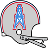
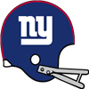

AFL Pro Bowl announced!The AFL Conference has announced their Pro Bowl squad for 1968.
QB Austin Chambers - Jets (286/385, 2822 yds, 15 TD)
QB Scott Lee - Bills (140/222, 2438 yds, 31 TD)
RB Tommy Mason - Dolphins (205 att, 986 yds, 14 TD, 11 rec, 102 yds, 1 TD)
RB Cyril Pinder - Bills (277 att, 1273 yds, 0 TD)
RB J.D. Garrett - Chiefs (206 att, 1025 yds, 17 TD, 29 rec, 225 yds, 1 TD)
FB Keith Lincoln - Chargers (66 att, 236 yds, 1 TD, 10 rec, 60 yds, 0 TD)
G Howard Fest - Dolphins (67 Pancakes)
G Billy Shaw - Bills (63 Pancakes)
T Jim Tyrer - Chiefs (77 Pancakes)
T Norm Evans - Broncos (78 Pancakes)
C Thomas Thames - Bills (63 Pancakes)
C Stacey Archie - Bengals (63 Pancakes)
TE Tom Mitchell - Bills (14 rec, 335 yds, 5 TD)
TE Jerry Smith - Chiefs (46 rec, 635 yds, 3 TD)
WR John Gilliam - Jets (88 rec, 1067 yds, 4 TD)
WR Carroll Dale - Oilers (54 rec, 778 yds, 5 TD)
WR Chip Myers - Dolphins (77 rec, 864 yds, 6 TD)
WR Lance Alworth - Chargers (38 rec, 872 yds, 11 TD)
WR Bob Scarpitto - Broncos (81 rec, 944 yds, 6 TD)
CB Jim Norton - Oilers (56 Tck, 1 Int, 5 FF, 4 FR)
CB Gus Hollomon - Oilers (61 Tck, 3 Int, 5 FF, 2 FR)
CB Al Coleman - Bills (60 Tck, 4 Int, 2 Def TD, 2 FF, 1 FR)
LB Mike Stratton - Bills (97 Tck, 10 Sck, 1 Int, 6 FF, 2 FR)
LB Chris Hanburger - Bills (131 Tck, 9 Sck, 1 Sfty, 2 FF, 1 FR)
LB Lee Roy Jordan - Raiders (129 Tck, 7 Sck, 1 Sfty)
LB Mike Curtis - Bengals (161 Tck, 1 Sck, 5 FF, 1 FR)
DT Merlin Olsen - Bills (77 Tck, 14 Sck, 1 FF, 2 FR)
DT Alan Page - Chargers (38 Tck, 4 Sck, 1 Def TD, 1 FF, 1 FR)
DE Carl Eller - Bills (44 Tck, 6 Sck, 4 FF, 4 FR)
DE Steve DeLong - Broncos (56 Tck, 10 Sck, 2 FF)
FS John Charles - Raiders (72 Tck, 4 Int, 1 Def TD)
FS Johnny Robinson - Chiefs (71 Tck, 3 Int, 2 Def TD)
SS Bobby Jancik - Oilers (79 Tck, 2 Sck, 2 Int, 2 FF, 1 FR)
SS Jerry Logan - Patriots (75 Tck, 2 Sck, 1 Int, 3 FF)
K Newton Shifflett - Broncos (36/37 FG)
P Ron Widby - Bills (2555 yards, 22 inside 20)NFL Pro Bowl announced!The NFL Conference has announced their Pro Bowl squad for 1968.
QB Greg Landry - Packers (218/317, 2538 yds, 24 TD)
QB Fran Tarkenton - Vikings (222/320, 2795 yds, 21 TD)
RB Wendell Hayes - Eagles (292 att, 1332 yds, 4 TD, 23 rec, 326 yds, 2 TD)
RB Floyd Little - Saints (332 att, 1401 yds, 7 TD, 16 rec, 147 yds, 0 TD)
RB Tom Matte - Colts (364 att, 1663 yds, 8 TD, 17 rec, 104 yds, 0 TD)
FB Ted Dean - Eagles (6 att, 12 yds, 6 TD)
G Dan Sullivan - Colts (65 Pancakes)
G Gene Upshaw - 49ers (72 Pancakes)
T Roy Skaggs - Eagles (88 Pancakes)
T Ralph Neely - Vikings (92 Pancakes)
C James Williams - Eagles (57 Pancakes)
C Mick Tingelhoff - Vikings (61 Pancakes)
TE John Mackey - 49ers (27 rec, 549 yds, 3 TD)
TE Jackie Smith - Lions (25 rec, 440 yds, 7 TD)
WR Hollis Talley - Steelers (59 rec, 969 yds, 8 TD)
WR Ben Hart - 49ers (48 rec, 794 yds, 8 TD)
WR Larry Elkins - Packers (71 rec, 1135 yds, 11 TD)
WR Fred Biletnikoff - Lions (52 rec, 1090 yds, 14 TD)
WR Paul Warfield - Vikings (71 rec, 1294 yds, 11 TD)
CB Mike Howell - Cowboys (63 Tck, 2 Int, 1 Def TD, 4 FF, 2 FR)
CB Bob Howard - Eagles (79 Tck, 1 Sck, 2 Int, 1 FF, 1 FR)
CB Herb Adderley - Packers (82 Tck, 1 Sck, 2 Int, 2 FF, 1 FR)
LB Maxie Baughan - Eagles (120 Tck, 2 Sck, 9 FF, 3 FR)
LB Marlin McKeever - Rams (112 Tck, 8 Sck, 1 Int, 4 FF, 3 FR)
LB Dick Butkus - 49ers (112 Tck, 6 Sck, 1 Int, 1 Sfty, 6 FF, 3 FR)
LB Wally Hilgenberg - Vikings (131 Tck, 3 Sck, 1 Int, 6 FF, 1 FR)
DT Buck Buchanan - Cardinals (52 Tck, 4 Sck, 2 FF, 1 FR)
DT Walter Johnson - Vikings (47 Tck, 7 Sck, 1 FF, 1 FR)
DE Deacon Jones - Rams (54 Tck, 7 Sck, 1 Sfty, 2 FF)
DE Earl Faison - Bears (62 Tck, 7 Sck, 5 FF, 2 FR)
FS Johnny Sample - Steelers (67 Tck, 3 Sck, 1 Int, 2 FF)
FS Eddie Meador - Rams (67 Tck, 2 Sck, 3 Int, 1 Def TD, 4 FF, 2 FR)
SS Byron Lavigne - Cardinals (73 Tck, 1 Sck, 1 Sfty, 1 FF, 1 FR)
SS Earsell Mackbee - Lions (73 Tck, 1 Sck, 3 FF, 3 FR)
K Gary Cartwright - Browns (36/38 FG)
P Richard Wheeler - Steelers (3660 yards, 26 inside 20)QB Scott Lee (Buf) wins League MVP! NEW YORK -- The Buffalo Bills' QB was a landslide winner Friday in balloting by a nationwide panel of 50 sports writers and broadcasters who cover the league. Lee won the MVP award by amassing season totals of 140/222, 2438 yds, 31 TD. NEW YORK -- The Buffalo Bills' QB was a landslide winner Friday in balloting by a nationwide panel of 50 sports writers and broadcasters who cover the league. Lee won the MVP award by amassing season totals of 140/222, 2438 yds, 31 TD.
"I really accept this award on behalf of the team and the organization because there is no way I would have accomplished this much without everyone creating a winning environment," Lee said after receiving the award.
QB Scott Lee (Buf) wins Playoff MVP!NEW YORK -- The Buffalo Bills' QB took home the 1968 Playoff MVP award today. Lee won the award by amassing playoff totals of 33/43, 693 yds, 6 TD.RB Wendell Hayes (Phi) wins Offensive Player of the Year! NEW YORK -- That blur speeding away from opposing defenses and running off with the Wolverine Studios Sports Network 1968 Offensive Player of the Year award is Wendell Hayes. Considered one of the fastest men in pro football, Hayes was uncatchable in racking up 1332 rushing yards on the season. NEW YORK -- That blur speeding away from opposing defenses and running off with the Wolverine Studios Sports Network 1968 Offensive Player of the Year award is Wendell Hayes. Considered one of the fastest men in pro football, Hayes was uncatchable in racking up 1332 rushing yards on the season.
That earned the back 38 1/2 votes Wednesday from a nationwide panel of 50 sports writers and broadcasters who cover the league.
"I kind of realize what I did and I feel like I had a dream season," said Hayes, who scored 4 touchdowns.
LB Chris Hanburger (Buf) wins Defensive Player of the Year!NEW YORK -- In his own view, Chris Hanburger put together his best professional season in 1968. How appropriate, then, that he is the Wolverine Studios Sports Newtwork 1968 Defensive Player of the Year.
The versatile Hanburger had 131 tackles, 9 sacks, 0 interceptions, and 2 forced fumbles with 0 defensive touchdowns, and was a key to the Bills' turnaround on defense. His role on the defense earned Hanburger a majority of votes Tuesday from a nationwide panel of 50 sports writers and broadcasters who cover the league.QB Austin Chambers (NYJ) wins Offensive Rookie of the Year! NEW YORK -- The New York Jets' QB was a landslide winner Friday in balloting by a nationwide panel of 50 sports writers and broadcasters who cover the league. Chambers won the Rookie of the Year award by amassing season totals of 286/385, 2822 yds, 15 TD. NEW YORK -- The New York Jets' QB was a landslide winner Friday in balloting by a nationwide panel of 50 sports writers and broadcasters who cover the league. Chambers won the Rookie of the Year award by amassing season totals of 286/385, 2822 yds, 15 TD.
DE Elvin Bethea (MIA) wins Defensive Rookie of the Year! NEW YORK -- The Miami Dolphins' DE was a landslide winner Friday in balloting by a nationwide panel of 50 sports writers and broadcasters who cover the league. Bethea won the Rookie of the Year award by amassing season totals of 55 Tck, 9 Sck, 2 FF, 1 FR. NEW YORK -- The Miami Dolphins' DE was a landslide winner Friday in balloting by a nationwide panel of 50 sports writers and broadcasters who cover the league. Bethea won the Rookie of the Year award by amassing season totals of 55 Tck, 9 Sck, 2 FF, 1 FR.
1968 Super BowlThe Buffalo Bills have defeated the Cleveland Browns in the 1968 Super Bowl.
The final score was Bills 26 - Browns 20.
Tom Mitchell - TE had a dominant game on offense playing a key part in the victory.
On defense Merlin Olsen - DT had a stellar outing helping seal the win.Philadelphia Eagles re-signs Maurice Carter as Defensive CoordinatorThe Eagles have announced that they have given Maurice Carter a new contract. Carter will continue to serve as Defensive Coordinator for 5 years earning 2 million pr year.NFL Championship Game The Cleveland Browns have defeated the Green Bay Packers in the 1968 NFL Championship Game. The Cleveland Browns have defeated the Green Bay Packers in the 1968 NFL Championship Game.
The final score was Packers 19 - Browns 22.
Gary Collins - WR had a dominant game on offense playing a key part in the victory.
On defense Andy Russell - LB had a stellar outing providing a silver lining to the loss.
AFL Championship GameThe Buffalo Bills have defeated the Boston Patriots in the 1968 AFL Championship Game.
The final score was Bills 27 - Patriots 6.
Scott Lee - QB had a dominant game on offense playing a key part in the victory.
On defense Justin Durr - DE had a stellar outing providing a silver lining to the loss.Green Bay Packers re-signs William Betz as Offensive Coordinator The Packers have announced that they have given William Betz a new contract. Betz will continue to serve as Offensive Coordinator for 7 years earning 4.1 million pr year. The Packers have announced that they have given William Betz a new contract. Betz will continue to serve as Offensive Coordinator for 7 years earning 4.1 million pr year.
AFL Divisional Round The Boston Patriots have defeated the Denver Broncos in the 1968 AFL Divisional Round. The Boston Patriots have defeated the Denver Broncos in the 1968 AFL Divisional Round.
The final score was Broncos 10 - Patriots 15.
Bruce Alford - K had a dominant game on offense playing a key part in the victory.
On defense Nick Buoniconti - LB had a stellar outing helping seal the win.
AFL Divisional RoundThe Buffalo Bills have defeated the Houston Oilers in the 1968 AFL Divisional Round.
The final score was Bills 31 - Oilers 20.
Scott Lee - QB had a dominant game on offense playing a key part in the victory.
On defense Carl Eller - DE had a stellar outing helping seal the win.NFL Divisional RoundThe Green Bay Packers have defeated the Washington Redskins in the 1968 NFL Divisional Round.
The final score was Packers 24 - Redskins 10.
Larry Elkins - WR had a dominant game on offense playing a key part in the victory.
On defense Don Hultz - DE had a stellar outing helping seal the win.NFL Divisional RoundThe Cleveland Browns have defeated the San Francisco 49ers in the 1968 NFL Divisional Round.
The final score was 49ers 10 - Browns 16.
Charlie Harper - T had a dominant game on offense even while his team lost.
On defense Dave Edwards - LB had a stellar outing helping seal the win.Week 15: RB Tom Matte (Bal) wins Offensive Player of the Week Week 15's Offensive Player of the Week is Running Back Tom Matte. His 28 att, 218 yds, 2 TD performance stood out in the 48 to 17 victory for the Baltimore Colts. Week 15's Offensive Player of the Week is Running Back Tom Matte. His 28 att, 218 yds, 2 TD performance stood out in the 48 to 17 victory for the Baltimore Colts.
The former Ohio State gridiron star is racking up the rushing yards and now has 1663 Yards and 8 Touchdowns for the season.
Week 15: CB Mike Howell (Dal) wins Defensive Player of the Week CB Mike Howell of the Dallas Cowboys has earned the Defensive Player of the Week award. Howell finished with 9 Tck, 1 Int, 1 Def TD, 2 FF, 1 FR. CB Mike Howell of the Dallas Cowboys has earned the Defensive Player of the Week award. Howell finished with 9 Tck, 1 Int, 1 Def TD, 2 FF, 1 FR.
Game Recaps for Week 15Steelers - 24, Giants - 10
Redskins - 24, Cowboys - 14
Browns - 31, Vikings - 27
Packers - 16, Bears - 13
Saints - 20, Cardinals - 16
Rams - 38, 49ers - 17
Colts - 48, Eagles - 17
Lions - 26, Falcons - 20
Chiefs - 22, Chargers - 17
Broncos - 30, Raiders - 10
Bills - 31, Jets - 17
Dolphins - 23, Oilers - 17Baltimore Colts re-signs Michael Brooks as Offensive CoordinatorThe Colts have announced that they have given Michael Brooks a new contract. Brooks will continue to serve as Offensive Coordinator for 4 years earning 2 million pr year.Game of the Week: Buffalo Bills at New York JetsOur Expert Predictions:
Jeremy Piper : Buffalo Bills
Looking at the two rosters, my line of thinking is that Billy Shaw - G always has an impact. The defense will have to gameplan for him if they want to stand even the slightest chance.
Mary Moore : Buffalo Bills
The Bills have really strong team play. You look at a player like Merlin Olsen - DT and what he does for a team. He makes everyone around him better. It might be a high scoring game.
Jim Nox : New York Jets
I think their offense is really good. They are 1st in the league pass completion percentage. They are 2nd in the league passing yards per game. They average 212.9!
Darren Francis : Buffalo Bills
They are on a win streak. They will continue that streak. They will win this game.
San Diego Chargers pull off the upset! The San Diego Chargers surprises everyone with an unlikely road win against Oakland Raiders. The San Diego Chargers surprises everyone with an unlikely road win against Oakland Raiders.
The Raiders never manage to take control of the game, while the Chargers kept grinding and drove the victory home. The Raiders players had expected an easy victory, and this will be a bitter loss and a tough blow to the self-respect of the program. Meanwhile the Chargers fans are ecstatic and are already entertaining thoughts about a cinderella future.
Samuel Pitman calls out Patriots TE Zawadzkas after loss.Samuel Pitman was angry with his teammates after the loss. He said that the entire team needed to step up. However, he also singled out some teammates. 'We lost and somebody is to blame. If you look at the game, you will see some players just are not delivering.' said the Patriots WR. Asked to clarify, Pitman suggested Jerry Zawadzkas - TE needs to perform better, but underscored that there was plenty of blame to go around. 'Guys need to listen, we need to get grinding, you cannot just show up and expect to play or expect to win', Pitman concluded.Week 14: RB Tom Matte (Bal) wins Offensive Player of the WeekThe honor comes after Matte's 30 att, 197 yds, 2 TD performance against the Atlanta Falcons. Matte from Ohio State was selected in round 0, 7 years ago.
Matte now has 1445 Rushing Yards and 6 Touchdowns for the season.Hadl cementing his status.The commisioner, in a recent interview, hinted that John Hadl - QB is among the favorites in his generation for the future hall of fame. Clearly, after 6 seasons in the league, playing at his level, it is hard to dispute. Hall of fame or not, Hadl is a legend, not only in San Diego, but nationally. The Chargers have made no comment on the subject before, but seem fairly satisfied with the whole thing.Coach Showdown with Simon Sly (Season 1968 Week 15)Time for this weeks get to know your coaches. As always, Simon Sly deliver with this weeks coach comparison. This week features two interesting specimens.
TODD HICKMAN, OFFENSIVE COORDINATOR, BOSTON PATRIOTS
The Patriots currently sit at 9-5.
Todd Hickman runs his offense conservatively. He is a silent, strong leader. He does his job meticulously without making unnecessary waves, and expects those around him to do the same.
Todd Hickman runs a run first Power offense. He wants running backs who can also block. Hickman prefers running up the middle. It's about taking what the defense gives you in the passing game, according to Hickman. The passing game is predicated on spreading the ball around to multiple targets.
They are 16th in the league pass completion percentage. They are 16th in the league passing touchdowns with 14. They are 17th in the league passing yards per game. Averaging 142.6.They are 16th in the league in sacks allowed.They are 17th in the league in pancakes.They are 8th in the league in passes of more than 20 yards.They are 18th in the league average yards per rush.They are 8th in the league rushing touchdowns with 15.They are 17th in the league rushing yards per game. They average 137.3.They are 18th in the league points scored per game. With an average of 19.2.
Hickman outperforms Bess in scouting.
Hickman is slightly more detail oriented than Bess.
Hickman prepares better than Bess.
SHELDON BESS, OFFENSIVE COORDINATOR, CINCINNATI BENGALS
The Bengals currently sit at 5-9.
Sheldon Bess runs his offense conservatively. He loves football, and it shows that this is his dreamjob. His eagerness to discuss all aspects of the game is infectious in an organisation.
Sheldon Bess runs a pass heavy Pro Style Hybrid offense. He prefers to use his fullbacks for blocking. It's about taking what the defense gives you in the passing game, according to Bess.
They are 13th in the league pass completion percentage.
They are 12th in the league passing touchdowns with 16.
They are 15th in the league passing yards per game. Averaging 154.9.
They are 7th in the league in sacks allowed.
They are 13th in the league in pancakes.
They are 18th in the league in passes of more than 20 yards.
They are 9th in the league average yards per rush.
They are 20th in the league rushing touchdowns with 9.
They are 9th in the league rushing yards per game. They average 154.9.
They are 20th in the league points scored per game. With an average of 18.5.
Bess is significantly better than Hickman in assessing the ability of players.
Bess is a better offisive mind than Hickman.
Bess seems a little bit smarter than Hickman.
Bess makes his players hit the weight room more often than Hickman.
Week 14: LB Mike Stratton (Buf) wins Defensive Player of the WeekLB Stratton absolutely dominated in the Bills 38-16 game with the Cincinnati Bengals. He finished with 13 Tck, 3 Sck, 2 FF.Game Recaps for Week 14Eagles - 38, Giants - 17
Lions - 35, Packers - 3
Steelers - 27, Cardinals - 10
Browns - 23, Redskins - 6
Bears - 19, Saints - 16
49ers - 26, Cowboys - 13
Rams - 29, Vikings - 21
Colts - 33, Falcons - 10
Broncos - 32, Chiefs - 14
Oilers - 10, Patriots - 3
Jets - 30, Dolphins - 24
Chargers - 35, Raiders - 28
Bills - 38, Bengals - 16Game of the Week: Green Bay Packers at Detroit LionsOur Expert Predictions:
Jeremy Piper : Green Bay Packers
Looking at the teams, a good bet is that Larry Elkins - WR needs to show up, but if he does the Packers will be putting up points.
Mary Moore : Detroit Lions
You just have to look at their defense. They are 5th in the league pass average yards per rush. They are 2nd in forced fumbles.
Jim Nox : Green Bay Packers
I just have this gut feeling. It may even be a blow out.
Darren Francis : Green Bay Packers
This is a dominant offense. They are 3rd in the league passing touchdowns with 23. There will be some wild plays in this game.
San Diego Chargers upset the Denver Broncos!The San Diego Chargers fans are celebrating after the Chargers took down the Denver Broncos.
In a superb effort the Chargers kept at it, and brought home the win. The Broncos are widely considered to be the better of the two programs, but with the Chargers winning the fans are hoping that the Chargers will soon be able to dance with the big boys.Snead a Raiders legend News in Oakland is that the retirement of Norm Snead - QB is on everyones minds this season. Surely, losing a legend of Snead's caliber is something the Raiders are planning for. Still, it is hard to feel sorry for Oakland. After all they do get to have a legend on their team for now. News in Oakland is that the retirement of Norm Snead - QB is on everyones minds this season. Surely, losing a legend of Snead's caliber is something the Raiders are planning for. Still, it is hard to feel sorry for Oakland. After all they do get to have a legend on their team for now.
Week 13: WR Lance Alworth (SD) wins Offensive Player of the WeekAlworth's 4 rec, 172 yds, 1 TD effort led the way for the San Diego Chargers. This weeks 172 receiving yards bring his season total to 768 yards with 8 touchdowns on the season.
"To Lance, football is about winning and nothing else. He is one of the hardest workers on our team and deserves the attention he is getting from the media and fans." - Chargers CoachWeek 13: LB Marlin McKeever (LA) wins Defensive Player of the Week LB McKeever absolutely dominated in the Rams 17-9 game with the Atlanta Falcons. He finished with 13 Tck, 2 Sck, 1 FF. LB McKeever absolutely dominated in the Rams 17-9 game with the Atlanta Falcons. He finished with 13 Tck, 2 Sck, 1 FF.
Game Recaps for Week 13Giants - 7, Redskins - 3
Packers - 24, Vikings - 16
Bears - 24, Browns - 10
Saints - 31, Steelers - 28
Cardinals - 20, Cowboys - 3
49ers - 16, Eagles - 13
Rams - 17, Falcons - 9
Lions - 35, Colts - 13
Chargers - 27, Broncos - 20
Oilers - 34, Chiefs - 23
Raiders - 20, Patriots - 17
Bills - 22, Jets - 17
Bengals - 17, Dolphins - 13Minnesota Vikings re-signs Nicholas Johnson as Offensive Coordinator The Vikings have announced that they have given Nicholas Johnson a new contract. Johnson will continue to serve as Offensive Coordinator for 3 years earning 2.5 million pr year. The Vikings have announced that they have given Nicholas Johnson a new contract. Johnson will continue to serve as Offensive Coordinator for 3 years earning 2.5 million pr year.
New York Jets re-signs Roger St. John as Offensive CoordinatorThe Jets have announced that they have given Roger St. John a new contract. St. John will continue to serve as Offensive Coordinator for 3 years earning 2.5 million pr year.Houston Oilers re-signs Cody Lowe as Defensive CoordinatorThe Oilers have announced that they have given Cody Lowe a new contract. Lowe will continue to serve as Defensive Coordinator for 3 years earning 3.6 million pr year.Kansas City Chiefs re-signs Lawrence Dejesus as Head Coach The Chiefs have announced that they have given Lawrence Dejesus a new contract. Dejesus will continue to serve as Head Coach for 2 years earning 4 million pr year. The Chiefs have announced that they have given Lawrence Dejesus a new contract. Dejesus will continue to serve as Head Coach for 2 years earning 4 million pr year.
Game of the Week: Minnesota Vikings at Green Bay PackersOur Expert Predictions:
Jeremy Piper : Minnesota Vikings
One of the most underestimated defenses. They are 5th in pass defense. They only give up 136.3 per game.
Mary Moore : Green Bay Packers
I see them winning again this week.
Jim Nox : Green Bay Packers
Team play. Playing as a unit. You cannot discount the difference it makes. I am thinking of a guy like Andy Russell - LB. Playing as a team is what gets them the win.
Darren Francis : Green Bay Packers
Head coach Robert Thompson has this team running like a well oiled machine.
49ers racking up yards! The offense of the 49ers is beating the stew out of everybody this year, posting 4162 total yards and 303 points thus far in 11 games. Quarterback Billy Kilmer - QB and receiver Ben Hart - WR have hooked up to the tune of 630 yards this season, while Running Back Les Josephson - RB has piled up for 1116. The hogs on the line has smashed opponents for 349 pancakes this season while allowing only 27 quarterback sacks. The offense of the 49ers is beating the stew out of everybody this year, posting 4162 total yards and 303 points thus far in 11 games. Quarterback Billy Kilmer - QB and receiver Ben Hart - WR have hooked up to the tune of 630 yards this season, while Running Back Les Josephson - RB has piled up for 1116. The hogs on the line has smashed opponents for 349 pancakes this season while allowing only 27 quarterback sacks.
Top receiver trio? The Broncos trio of Bob Scarpitto - WR, Lionel Taylor - WR and Jack Clancy - WR are currently the leading trio of pass catchers in the league, with 1934 receiving yards between the three. The Broncos trio of Bob Scarpitto - WR, Lionel Taylor - WR and Jack Clancy - WR are currently the leading trio of pass catchers in the league, with 1934 receiving yards between the three.
Coach Showdown with Simon Sly (Season 1968 Week 13)Welcome to Coach Showdown with me. I'm Simon Sly. We have an odd couple for you this week.
JASON BRIONES, HEAD COACH, CINCINNATI BENGALS
The Bengals currently sit at 4-8.
Jason Briones preaches flexibility on both offense and defense, focusing on what the situation demands. He adapts his demeanor to the situation, and does whatever he thinks it takes to get through to his players and co-workers.
Briones outperforms Arredondo in scouting.
Briones is much more charismatic than Arredondo.
Briones outperforms Arredondo in player development.
Briones exhibits way more flexibility than Arredondo.
Briones motivates his team a little better than Arredondo.
Briones has a stronger focus on physical training than Arredondo.
Briones prepares for opponents way more than Arredondo.
DOUGLAS ARREDONDO, HEAD COACH, NEW YORK JETS
The Jets currently sit at 6-5.
Douglas Arredondo wants to be aggressive on both sides of the ball. Professionalism is the key for him. He demands accountability from everyone around him.
Arredondo is slightly better than Briones at estimating player potential.
Week 12: LB Bernie Erickson (Phi) wins Defensive Player of the WeekLB Erickson absolutely dominated in the Eagles 18-0 game with the St. Louis Cardinals. He finished with 11 Tck, 1 Sck, 1 Sfty, 2 FF, 1 FR.Week 12: RB Dave Osborn (NYG) wins Offensive Player of the WeekThe honor comes after Osborn's 18 att, 133 yds, 1 TD performance against the New York Giants. Osborn from North Dakota was selected in round 1, 3 years ago.
Osborn now has 932 Rushing Yards and 5 Touchdowns for the season.Game Recaps for Week 12Eagles - 18, Cardinals - 0
Cowboys - 23, Falcons - 13
Vikings - 27, Lions - 24
Bears - 27, Rams - 13
Redskins - 38, Steelers - 17
Packers - 14, Browns - 3
Saints - 21, Giants - 20
Colts - 33, 49ers - 27
Dolphins - 13, Jets - 7
Bills - 37, Broncos - 17
Bengals - 28, Raiders - 13
Patriots - 24, Chargers - 13Oakland Raiders re-signs Francisco James as Offensive CoordinatorThe Raiders have announced that they have given Francisco James a new contract. James will continue to serve as Offensive Coordinator for 4 years earning 1.5 million pr year.Washington Redskins re-signs Irving Castro as Head Coach The Redskins have announced that they have given Irving Castro a new contract. Castro will continue to serve as Head Coach for 4 years earning 2.5 million pr year. The Redskins have announced that they have given Irving Castro a new contract. Castro will continue to serve as Head Coach for 4 years earning 2.5 million pr year.
San Francisco 49ers re-signs Arthur Lilly as Head CoachThe 49ers have announced that they have given Arthur Lilly a new contract. Lilly will continue to serve as Head Coach for 4 years earning 6.5 million pr year.Game of the Week: Green Bay Packers at Cleveland BrownsOur Expert Predictions:
Jeremy Piper : Green Bay Packers
This defense is likely to step up this week. They are 3rd in points allowed, averaging only 13.2. They are 3rd in run defense. Giving up only 103.5 yards per game. They are 4th in interceptions with 8. They are 2nd in the league in tackles for loss.
Mary Moore : Green Bay Packers
I think having a team players like Andy Russell - LB is the kind of thing that will help the Packers win this game. This is going to be a very viewer friendly game.
Jim Nox : Green Bay Packers
This is just what my gut tells me.
Darren Francis : Green Bay Packers
Replace the batteries in your remote. You do not want to miss this game.
New York Giants defense dominates!The Giants' defense is playing lights out this season. In 10 games they’ve given up only 2345 total yards and 133 points. Dan Conners - LB is the field general of the defense with 67 take downs on the year. Could the Big Blue Wrecking Crew be back in New York?Big boys shows the way in Minnesota.The guys in the offensive trenches from Vikings are winning the war in the trenches this year. They’ve given up only 2 sacks in 10 games while collecting 306 pancakes.Len Hauss takes aim at the Dolphins.War of words happening between the Broncos and the Dolphins after game. 'I think we were the best team on the field. You know, the Dolphins can point to the result all they want, but they did not deserve to win this.Week 11: RB Gale Sayers (Cle) wins Offensive Player of the WeekWeek 11's Offensive Player of the Week is Running Back Gale Sayers. His 19 att, 104 yds, 1 TD, 4 rec, 71 yds, 0 TD performance stood out in the 20 to 16 victory for the Cleveland Browns.
The former Kansas gridiron star is racking up the rushing yards and now has 676 Yards and 3 Touchdowns for the season.Week 11: LB Maxie Baughan (Phi) wins Defensive Player of the WeekLB Maxie Baughan of the Philadelphia Eagles has earned the Defensive Player of the Week award. Baughan finished with 12 Tck, 1 Sck, 2 FF, 2 FR.Game Recaps for Week 11Eagles - 20, Redskins - 12
Giants - 19, Cowboys - 9
Vikings - 44, Colts - 10
Lions - 40, Cardinals - 14
Packers - 24, Steelers - 17
Browns - 20, Saints - 16
49ers - 27, Bears - 22
Rams - 37, Falcons - 31
Patriots - 27, Broncos - 3
Jets - 17, Bengals - 13
Oilers - 31, Chargers - 0
Bills - 44, Raiders - 10
Dolphins - 43, Chiefs - 13Boston Patriots re-signs Jerrod Tatum as Head CoachThe Patriots have announced that they have given Jerrod Tatum a new contract. Tatum will continue to serve as Head Coach for 4 years earning 7.5 million pr year.Kansas City Chiefs re-signs Darrell Edmonds as Defensive CoordinatorThe Chiefs have announced that they have given Darrell Edmonds a new contract. Edmonds will continue to serve as Defensive Coordinator for 4 years earning 2.5 million pr year.San Francisco 49ers re-signs Neal Roberts as Defensive CoordinatorThe 49ers have announced that they have given Neal Roberts a new contract. Roberts will continue to serve as Defensive Coordinator for 6 years earning 3 million pr year.Game of the Week: Washington Redskins at Philadelphia EaglesOur Expert Predictions:
Jeremy Piper : Philadelphia Eagles
This is a high powered offense. They are maulers, 5th in the league in pancakes. They are 2nd in the league in passes of more than 20 yards. They are 2nd in the league average yards per rush. They are 4th in the league points scored per game. They average 24.8!
Mary Moore : Washington Redskins
Get your popcorn ready.
Jim Nox : Philadelphia Eagles
Head coach Johnathan Tran puts them over the top in this game. They greatly outscore them here.
Darren Francis : Philadelphia Eagles
I am looking forward to watching this showdown.
Top receiver trio?The Broncos trio of Bob Scarpitto - WR, Lionel Taylor - WR and Jack Clancy - WR are currently the leading trio of offensive skill players catching the ball in the league, with 1518 receiving yards between the three.Los Angeles Rams pull off the upset!With an outstanding effort the Los Angeles Rams pull off the upset against New York Giants.
Everyone had expected the New York Giants to handle the Los Angeles Rams with ease, but the Rams just wanted it more. This was really a must win game for the Giants, and the loss will surely put a dent in their confidence.Coach Showdown with Simon Sly (Season 1968 Week 11)Simon Sly is back with this week's edition of Coach Showdown. This week features two interesting specimens.
JASON BRIONES, HEAD COACH, CINCINNATI BENGALS
The Bengals currently sit at 3-7.
Jason Briones preaches flexibility on both offense and defense, focusing on what the situation demands. He adapts his demeanor to the situation, and does whatever he thinks it takes to get through to his players and co-workers.
Briones is a better offisive mind than Mireles.
Briones motivates his team a little better than Mireles.
Briones prepares better than Mireles.
KEVIN MIRELES, HEAD COACH, SAN DIEGO CHARGERS
The Chargers currently sit at 1-8.
Kevin Mireles wants to be aggressive on both sides of the ball. His attitude is relaxed, and he is good at making everyone around him feel comfortable and promotes a friendly and unceremonial atmosphere in the organisation.
Mireles has a slightly better grasp of coaching defense than Briones.
Mireles is not as rigid as Briones.
Locker rooms need leadersit has been visible on the field, the Patriots locker room loves Ray Schoenke! The 27-year old G has been showing incredible leadership, and has really managed to pull the Patriots team together. Coaches are over the moon with the leader he has become.Week 10: WR Fred Biletnikoff (Det) wins Offensive Player of the Week Biletnikoff's 5 rec, 194 yds, 2 TD effort led the way for the Detroit Lions. His 194 receiving yards bring his season total to 758 yards with 9 touchdowns on the season. Biletnikoff's 5 rec, 194 yds, 2 TD effort led the way for the Detroit Lions. His 194 receiving yards bring his season total to 758 yards with 9 touchdowns on the season.
Week 10: LB Dick Butkus (SF) wins Defensive Player of the WeekLB Butkus absolutely dominated in the 49ers 31-7 game with the Atlanta Falcons. He finished with 9 Tck, 1 Sck, 1 Int, 1 FF, 1 FR.Game Recaps for Week 10Redskins - 27, Colts - 0
Eagles - 35, Cowboys - 28
Vikings - 38, Steelers - 21
Lions - 37, Saints - 10
Packers - 17, Bears - 6
Cardinals - 17, Browns - 16
Rams - 10, Giants - 3
49ers - 31, Falcons - 7
Raiders - 19, Chargers - 14
Dolphins - 21, Broncos - 20
Chiefs - 40, Bengals - 28
Patriots - 20, Jets - 13
Oilers - 38, Bills - 26Oakland Raiders re-signs Alexander Gibson as Defensive CoordinatorThe Raiders have announced that they have given Alexander Gibson a new contract. Gibson will continue to serve as Defensive Coordinator for 5 years earning 5.5 million pr year.Boston Patriots re-signs Timothy Popp as Defensive CoordinatorThe Patriots have announced that they have given Timothy Popp a new contract. Popp will continue to serve as Defensive Coordinator for 4 years earning 1.5 million pr year.New York Giants re-signs Luke Nelson as Defensive CoordinatorThe Giants have announced that they have given Luke Nelson a new contract. Nelson will continue to serve as Defensive Coordinator for 5 years earning 2 million pr year.Baltimore Colts re-signs Willis Avery as Defensive CoordinatorThe Colts have announced that they have given Willis Avery a new contract. Avery will continue to serve as Defensive Coordinator for 7 years earning 2.5 million pr year.Game of the Week: Cleveland Browns at St. Louis CardinalsOur Expert Predictions:
Jeremy Piper : St. Louis Cardinals
Looking at the two rosters, I think that Willie Lanier - LB will shine for the Cardinals defense.
Mary Moore : St. Louis Cardinals
Do not believe it if anyone tells you the Cardinals are overhyped. They are who we thought they were.
Jim Nox : Cleveland Browns
Do not sleep on this offense.
Darren Francis : Cleveland Browns
It might be a high scoring game.
Top receiver trio?The Packers trio of Larry Elkins - WR, Jack Snow - WR and Archie Hoang - WR are currently the leading trio of catchers in the league, with 17 receving touchdowns between the three.'I am better than Dolphins' Elvin Bethea', says Ron McDoleDE Ron McDole had words of praise for himself in a recent interview. 'I am one of the best DEs in the game', he said. 'You cannot help but compare yourself to other players. Sure, there are, were or will be someone who is better than me, but I feel confident that Bethea is not one of them.' the 29 year old DE said.Week 9: LB Chris Hanburger (Buf) wins Defensive Player of the WeekLB Chris Hanburger of the Buffalo Bills has earned the Defensive Player of the Week award. Hanburger finished with 10 Tck, 2 Sck, 1 Sfty.Week 9: RB Wendell Hayes (Phi) wins Offensive Player of the WeekWeek 9's Offensive Player of the Week is Running Back Wendell Hayes. His 24 att, 222 yds, 2 TD, 3 rec, 54 yds, 1 TD performance stood out in the 42 to 21 victory for the Philadelphia Eagles.
The former Humboldt State gridiron star is racking up the rushing yards and now has 801 Yards and 4 Touchdowns for the season.Game Recaps for Week 9Eagles - 42, Falcons - 21
Cardinals - 14, Redskins - 6
Giants - 14, Cowboys - 7
Packers - 24, Saints - 10
Bears - 31, Lions - 24
Browns - 16, Steelers - 0
49ers - 24, Vikings - 17
Colts - 23, Rams - 17
Dolphins - 47, Chargers - 24
Oilers - 35, Bengals - 0
Jets - 32, Broncos - 29
Bills - 42, Patriots - 10
Raiders - 20, Chiefs - 19Buffalo Bills re-signs Theodore Dwyer as Offensive CoordinatorThe Bills have announced that they have given Theodore Dwyer a new contract. Dwyer will continue to serve as Offensive Coordinator for 5 years earning 5.3 million pr year.Game of the Week: St. Louis Cardinals at Washington RedskinsOur Expert Predictions:
Jeremy Piper : Washington Redskins
Of course the Redskins win. Have you been living under a rock?
Mary Moore : St. Louis Cardinals
When you think of the players that will be on the field, you would be a fool not to think that Don Meredith - QB is the kind of player you just cannot contain for a whole game. A double digit win.
Jim Nox : St. Louis Cardinals
They are well coached. I am sure head coach Ronald Forte has them prepared for this game. He is innovative with his defense.
Darren Francis : St. Louis Cardinals
Leadership. You cannot discount the difference it makes. I am thinking of a guy like Larry Wilson - CB. He will lead the way and help them win.
Atlanta Falcons surprise everyone! With an outstanding effort the Atlanta Falcons pull off the upset against Green Bay Packers. With an outstanding effort the Atlanta Falcons pull off the upset against Green Bay Packers.
Everyone had expected the Green Bay Packers to handle the Atlanta Falcons with ease, but the Falcons just wanted it more. This was really a must win game for the Packers, and the loss will surely put a dent in their confidence.
New Orleans Saints upset the Pittsburgh Steelers! The New Orleans Saints fans are celebrating after the Saints took down the Pittsburgh Steelers. The New Orleans Saints fans are celebrating after the Saints took down the Pittsburgh Steelers.
In a superb effort the Saints kept at it, and brought home the win. The Steelers are widely considered to be the better of the two programs, but with the Saints winning the fans are hoping that the Saints will soon be able to dance with the big boys.
Who is the best T? Browns' Winston Hill or Vikings' Art Shell?Browns T Winston Hill compared himself to Art Shell of the Vikings in a postgame interview. 'haha, and then these clowns on the internet think Art Shell is even comparable to me. You pick and drill, and I would gladly show how wrong they are' said the Browns T. He added: 'Sure, I do not want to be mean, Art Shell is a decent T, but seriously just look at the tape'.Coach Showdown with Simon Sly (Season 1968 Week 9)Time for this weeks get to know your coaches. As always, Simon Sly deliver with this weeks coach comparison. Let us get on with it.
JEREMY OTERO, HEAD COACH, BUFFALO BILLS
The Bills currently sit at 4-3.
Jeremy Otero wants to be aggressive on both sides of the ball. He is serious and unrelenting, asserts his authority and has little tolerance for distractions.
Otero has a slightly better grasp of coaching defense than Morgan.
Otero is a better offisive mind than Morgan.
Otero is not as rigid as Morgan.
Otero seems a little bit smarter than Morgan.
WILLIE MORGAN, HEAD COACH, LOS ANGELES RAMS
The Rams currently sit at 1-6.
Willie Morgan wants to be aggressive on both sides of the ball. He loves football, and it shows that this is his dreamjob. His eagerness to discuss all aspects of the game is infectious in an organisation.
Morgan outperforms Otero in scouting.
Morgan outperforms Otero in assessing player ability.
Morgan works with young players somewhat better than Otero.
Ross giving back.Los Angeles benefits from community work by Rams' FB Willie Ross. Ross recently has spend his free time working with troubled youth. An official statement on the matter read: 'Needless to say, the organization is proud of the Ross'.Week 8: LB Nick Buoniconti (Bos) wins Defensive Player of the WeekLB Buoniconti absolutely dominated in the Oilers 30-9 game with the Boston Patriots. He finished with 13 Tck, 2 Sck, 1 FF, 2 FR.Week 8: QB Milt Plum (Det) wins Offensive Player of the WeekThe Detroit Lions' Milt Plum threw 5 touchdowns, completing 17 of 26 passes for 378 yards in the Lions victory over the Los Angeles Rams.
After being drafted in Round 0 of the 0 amateur draft, season number 11 for Plum, has seen some impressive numbers including 5 touchdown passes this season.Game Recaps for Week 8Giants - 27, Eagles - 17
Redskins - 23, 49ers - 15
Browns - 9, Cowboys - 7
Lions - 42, Rams - 27
Cardinals - 20, Vikings - 13
Saints - 14, Steelers - 9
Colts - 13, Bears - 10
Falcons - 13, Packers - 10
Oilers - 30, Patriots - 9
Jets - 31, Chargers - 26
Bills - 49, Dolphins - 21
Raiders - 34, Bengals - 3
Broncos - 31, Chiefs - 24Denver Broncos re-signs Wayne Churchill as Defensive CoordinatorThe Broncos have announced that they have given Wayne Churchill a new contract. Churchill will continue to serve as Defensive Coordinator for 4 years earning 3 million pr year.Denver Broncos re-signs Willie Luong as Head CoachThe Broncos have announced that they have given Willie Luong a new contract. Luong will continue to serve as Head Coach for 5 years earning 6.3 million pr year.Green Bay Packers re-signs Alvin Blythe as Defensive CoordinatorThe Packers have announced that they have given Alvin Blythe a new contract. Blythe will continue to serve as Defensive Coordinator for 4 years earning 1 million pr year.Green Bay Packers re-signs Robert Thompson as Head CoachThe Packers have announced that they have given Robert Thompson a new contract. Thompson will continue to serve as Head Coach for 8 years earning 5.8 million pr year.Cleveland Browns re-signs Franklin Davis as Defensive CoordinatorThe Browns have announced that they have given Franklin Davis a new contract. Davis will continue to serve as Defensive Coordinator for 4 years earning 2 million pr year.Cleveland Browns re-signs Nathan Hyde as Offensive CoordinatorThe Browns have announced that they have given Nathan Hyde a new contract. Hyde will continue to serve as Offensive Coordinator for 2 years earning 2.5 million pr year.Game of the Week: San Francisco 49ers at Washington RedskinsOur Expert Predictions:
Jeremy Piper : San Francisco 49ers
The 49ers win. You can quote me on that. This will be a very entertaining game.
Mary Moore : San Francisco 49ers
Head coach Arthur Lilly puts them over the top in this game.
Jim Nox : Washington Redskins
Looking at how the teams match up, logic entails that Julius Gomes - DT is the guy to watch, this man is pivotal to the Redskins defense. I expect some incredible plays in this game.
Darren Francis : San Francisco 49ers
I see a lot of points being scored in this game.
New Orleans Saints upset the Minnesota Vikings!With an outstanding effort the New Orleans Saints pull off the upset against Minnesota Vikings.
Everyone had expected the Minnesota Vikings to handle the New Orleans Saints with ease, but the Saints just wanted it more. This was really a must win game for the Vikings, and the loss will surely put a dent in their confidence.Dissatisfaction after Giants-49ers game!War of words happening between the Giants and the 49ers after game. Joe Scibelli - G left no possibility for mistakes about his opinion of the 49ers. 'They should care more about how they carry themselves. They were acting like classless clowns', a clearly bitter Scibelli said.Week 7: LB Andy Russell (GB) wins Defensive Player of the WeekLB Russell absolutely dominated in the Packers 23-22 game with the San Francisco 49ers. He finished with 10 Tck, 2 Sck, 1 Blk FG.Week 7: RB J.D. Garrett (KC) wins Offensive Player of the WeekWeek 7's Offensive Player of the Week is Running Back J.D. Garrett. His 12 att, 176 yds, 3 TD performance stood out in the 59 to 13 victory for the Kansas City Chiefs.
The former Grambling State gridiron star is racking up the rushing yards and now has 544 Yards and 10 Touchdowns for the season.Game Recaps for Week 7Packers - 23, 49ers - 22
Bears - 27, Falcons - 17
Steelers - 40, Lions - 31
Cardinals - 28, Giants - 5
Browns - 26, Eagles - 6
Saints - 23, Vikings - 20
Redskins - 10, Rams - 6
Colts - 22, Cowboys - 3
Bills - 16, Oilers - 13
Bengals - 27, Jets - 20
Broncos - 30, Chargers - 24
Chiefs - 59, Raiders - 13
Patriots - 20, Dolphins - 10Game of the Week: San Francisco 49ers at Green Bay PackersOur Expert Predictions:
Jeremy Piper : San Francisco 49ers
A double digit win.
Mary Moore : Green Bay Packers
People tend to underestimate their defense. They are 4th in points allowed, averaging only 12.8. They are 5th in run defense. Giving up only 110 yards per game. They are 1st in interceptions with 7. They are 5th in forced fumbles.
Jim Nox : San Francisco 49ers
They greatly outscore them here.
Darren Francis : San Francisco 49ers
Do not throw statistics at me! The 49ers win because they are the better team.
Detroit Lions upset the Chicago Bears!With an outstanding effort the Detroit Lions pull off the upset against Chicago Bears.
Everyone had expected the Chicago Bears to handle the Detroit Lions with ease, but the Lions just wanted it more. This was really a must win game for the Bears, and the loss will surely put a dent in their confidence.Coach Showdown with Simon Sly (Season 1968 Week 7)Simon Sly is here to bring you another edition of Coach Showdown. This is an interesting week.
BRIAN CLEGG, HEAD COACH, OAKLAND RAIDERS
The Raiders currently sit at 3-2.
Brian Clegg wants to be aggressive on both sides of the ball. He is a silent, strong leader. He does his job meticulously without making unnecessary waves, and expects those around him to do the same.
Clegg has a slightly better grasp of coaching defense than Briones.
Clegg is better suited to lead a team than Briones.
JASON BRIONES, HEAD COACH, CINCINNATI BENGALS
The Bengals currently sit at 2-4.
Jason Briones preaches flexibility on both offense and defense, focusing on what the situation demands. He adapts his demeanor to the situation, and does whatever he thinks it takes to get through to his players and co-workers.
Briones is much more charismatic than Clegg.
Briones is a better offisive mind than Clegg.
Briones outperforms Clegg in player development.
Briones maintains significantly more discipline than Clegg.
Briones has a stronger focus on physical training than Clegg.
Briones prepares better than Clegg.
Week 6: LB Lee Roy Caffey (Det) wins Defensive Player of the WeekLB Caffey absolutely dominated in the Lions 17-12 game with the Chicago Bears. He finished with 7 Tck, 2 Sck, 1 FF.Week 6: QB Scott Lee (Buf) wins Offensive Player of the WeekThe league announced Buffalo Bills quarterback Scott Lee has been named Offensive Player of the Week.
The Bills defeated the San Diego Chargers, 37 to 14. Lee did his part, throwing 3 touchdowns, completing 16 of 23 passes for 249 yards. His outstanding performance now brings his season Touchdown to Interception Ratio to 7 to 1, and a passer rating of 118.3.Game Recaps for Week 6Eagles - 23, Cowboys - 20
Colts - 17, Giants - 13
Vikings - 34, Packers - 3
Lions - 17, Bears - 12
Steelers - 24, Cardinals - 21
Browns - 23, Saints - 7
49ers - 38, Rams - 10
Redskins - 35, Falcons - 13
Bills - 37, Chargers - 14
Dolphins - 27, Oilers - 0
Broncos - 34, Raiders - 24
Jets - 20, Patriots - 10
Chiefs - 41, Bengals - 20Trade AlertThe Cowboys trade Roland Beauregard - RB and a Cowboys 1969 4th Round Pick to the Bengals for Tom Woodeshick - RB.Game of the Week: Boston Patriots at New York JetsOur Expert Predictions:
Jeremy Piper : Boston Patriots
Looking at how the teams match up, I know it is not trendy, but I think that you have to focus on this CB named Richie Petitbon. I expect everyone knows this guy will be a wrecking ball. And you can take that with you to the bank.
Mary Moore : New York Jets
The Jets are a much better team than everyone thinks
Jim Nox : Boston Patriots
They play great together. Having a guy like Emerson Boozer - RB on the field who understands what everyone needs to do and helping them play as a unit will help them a great deal in this game.
Darren Francis : New York Jets
I am sure head coach Douglas Arredondo has something up his sleeve for this game. Lots of points scored.
Pickens unhappy after the Giants close loss.War of words happening between the Giants and the 49ers after game. The Giants C said he lost all respect for the 49ers. 'I think this game proves that sometimes teams get lucky in this league, and that the 49ers just got lucky', he said.Week 5: FS Eddie Meador (LA) wins Defensive Player of the WeekFS Meador's ball hawking ability was on display in the Rams 62-17 game with the Baltimore Colts. He finished with 3 Tck, 2 Int, 1 Def TD.
"Eddie has the unique ability to make plays and generate turnovers." -Rams Defensive CoordinatorWeek 5: RB Jim Kiick (SD) wins Offensive Player of the WeekThe honor comes after Kiick's 17 att, 150 yds, 1 TD performance against the Cincinnati Bengals. Kiick from Wyoming was selected in round 2, 0 years ago.
Kiick now has 342 Rushing Yards and 1 Touchdowns for the season.Game Recaps for Week 5Redskins - 31, Eagles - 17
49ers - 45, Lions - 23
Packers - 19, Cardinals - 0
Bears - 21, Vikings - 10
Steelers - 30, Browns - 3
Cowboys - 14, Saints - 12
Rams - 62, Colts - 17
Giants - 9, Falcons - 3
Patriots - 42, Chiefs - 21
Jets - 26, Oilers - 15
Broncos - 26, Bills - 0
Raiders - 41, Dolphins - 22
Chargers - 42, Bengals - 14Game of the Week: Kansas City Chiefs at Boston PatriotsOur Expert Predictions:
Jeremy Piper : Boston Patriots
Leadership. You cannot discount the difference it makes. I am thinking of a guy like Emerson Boozer - RB. He will lead the way and help them win.
Mary Moore : Kansas City Chiefs
Looking at the teams, there is every reason to think that Jim Skaggs - G is hard to gameplan for. Look for him to dominate.
Jim Nox : Kansas City Chiefs
This may be where we see their true colors.
Darren Francis : Boston Patriots
They are on a win streak. They will continue that streak. They will win this game.
Week 4: RB Tommy Mason (MIA) wins Offensive Player of the WeekThe honor comes after Mason's 15 att, 174 yds, 2 TD performance against the San Diego Chargers. Mason from Tulane was selected in round 0, 7 years ago.
Mason now has 261 Rushing Yards and 3 Touchdowns for the season.Coach Showdown with Simon Sly (Season 1968 Week 5)Welcome to Coach Showdown with Simon Sly. This week features two interesting specimens.
JERROD TATUM, HEAD COACH, BOSTON PATRIOTS
The Patriots currently sit at 4-0.
Jerrod Tatum wants his offense and defense to play smart, conservative football. Let the other team make the mistakes. He adapts his demeanor to the situation, and does whatever he thinks it takes to get through to his players and co-workers.
Tatum outperforms Martel in assessing player ability.
Tatum is slightly better than Martel at estimating player potential.
Tatum is better suited to lead a team than Martel.
EDMUNDO MARTEL, HEAD COACH, HOUSTON OILERS
The Oilers currently sit at 2-2.
Edmundo Martel wants to be aggressive on both sides of the ball. He is serious and unrelenting, asserts his authority and has little tolerance for distractions.
Martel is slightly more detail oriented than Tatum.
Martel is a much sharper defensive mind than Tatum.
Martel is a better offisive mind than Tatum.
Martel exhibits way more flexibility than Tatum.
Week 4: DE Ben Davidson (Was) wins Defensive Player of the WeekDE Davidson absolutely dominated in the Redskins 44-10 game with the New Orleans Saints. He finished with 1 Tck, 1 Sck, 1 Def TD, 1 FF, 1 FR.Game Recaps for Week 4Eagles - 30, Rams - 7
Giants - 17, Browns - 10
Redskins - 44, Saints - 10
Steelers - 24, Cowboys - 0
Falcons - 41, Vikings - 24
Packers - 30, Lions - 3
Bears - 30, Cardinals - 17
49ers - 27, Colts - 23
Jets - 23, Chiefs - 20
Dolphins - 44, Chargers - 13
Raiders - 26, Oilers - 18
Bengals - 34, Broncos - 22
Patriots - 20, Bills - 3Game of the Week: Buffalo Bills at Boston PatriotsOur Expert Predictions:
Jeremy Piper : Buffalo Bills
All aboard the Bills hypetrain.
Mary Moore : Boston Patriots
In the context of this game, my prediction is that the defense will struggle to counter Bill Nelsen - QB. Watch out for him. This is going to be a very viewer friendly game.
Jim Nox : Buffalo Bills
Head coach Jeremy Otero has this team running like a well oiled machine. He is running a great offense.
Darren Francis : Boston Patriots
The difference in this game will be their offense. They are 3rd in the league passing touchdowns with 4. They are 5th in the league rushing yards per game. They average 164.3! This game will be so very entertaining.
Week 3: WR Larry Elkins (GB) wins Offensive Player of the WeekElkins's 6 rec, 180 yds, 4 TD effort led the way for the Green Bay Packers. This weeks 180 receiving yards bring his season total to 328 yards with 6 touchdowns on the season.
"To Larry, football is about winning and nothing else. He is one of the hardest workers on our team and deserves the attention he is getting from the media and fans." - Packers CoachWeek 3: FS Johnny Robinson (KC) wins Defensive Player of the WeekFS Robinson's ball hawking ability was on display in the Chiefs 21-17 game with the San Diego Chargers. He finished with 5 Tck, 1 Int, 1 Def TD.
"Johnny has the unique ability to make plays and generate turnovers." -Chiefs Defensive CoordinatorGame Recaps for Week 3Eagles - 34, Saints - 20
49ers - 23, Giants - 22
Redskins - 27, Cowboys - 6
Vikings - 33, Lions - 9
Bears - 24, Steelers - 10
Browns - 33, Cardinals - 3
Packers - 42, Rams - 24
Colts - 34, Falcons - 13
Raiders - 17, Jets - 16
Bills - 24, Dolphins - 3
Oilers - 35, Broncos - 30
Chiefs - 21, Chargers - 17
Patriots - 17, Bengals - 13Trade AlertThe Jets trade Joe Auer - RB and a Jets 1969 5th Round Pick to the Rams for Jim Mankins - RB.Trade AlertThe Giants trade John Wilbur - G and a Giants 1969 7th Round Pick to the Vikings for Rick Sortun - G.Game of the Week: St. Louis Cardinals at Cleveland BrownsOur Expert Predictions:
Jeremy Piper : Cleveland Browns
I have a lot of respect for head coach Alfonso Hutcheson. He is doing great things in Cleveland. He is innovative with his defense. Easy prediction.
Mary Moore : St. Louis Cardinals
You got to like this defense. This may be one for the ages.
Jim Nox : Cleveland Browns
You got to like this offense.
Darren Francis : St. Louis Cardinals
This is just going by my intuition. Lots of points scored.
Coach Showdown with Simon Sly (Season 1968 Week 3)Simon Sly is here to bring you another edition of Coach Showdown. We have an odd couple for you this week.
ROGER DUNLAP, DEFENSIVE COORDINATOR, WASHINGTON REDSKINS
The Redskins currently sit at 0-1.
Roger Dunlap favors an aggressive defense. His attitude is relaxed, and he is good at making everyone around him feel comfortable and promotes a friendly and unceremonial atmosphere in the organisation.
Roger Dunlap runs a 3-4 defense. His system requires top notch cornerbacks. He prefers mixing up coverage. He targets the rungame, daring the offense to pass. Dunlap aims to field versatile linebackers.
They are 8th in sacks with 2.
They are 9th in points allowed, averaging 14.
They are 6th in pass defense with 102 yards given up per game.
They are 17th in run defense. Giving up 143 yards per game.
They are 13th in interceptions with 0.
They are 9th in the league in tackles for loss.
They are 3rd in forced fumbles.
Dunlap is slightly more detail oriented than Willis.
Dunlap works with young players somewhat better than Willis.
CHARLES WILLIS, DEFENSIVE COORDINATOR, NEW YORK JETS
The Jets currently sit at 0-1.
Charles Willis wants to stay unpredictable on defense, favoring a balanced approach. He is serious and unrelenting, asserts his authority and has little tolerance for distractions.
Charles Willis runs a 4-3 Hybrid defense. The scheme depends on dominating in the trenches. He prefers mixing up coverage. Willis aims to field versatile linebackers.
They are 14th in sacks with 2.
They are 25th in points allowed, averaging 33.
They are 1st in pass defense with 43 yards given up per game.
They are 26th in run defense. Giving up 269 yards per game.
They are 22nd in interceptions with 0.
They are 14th in the league in tackles for loss.
They are 25th in forced fumbles.
Willis outperforms Dunlap in assessing player ability.
Willis outperforms Dunlap in player development.
Willis is not as rigid as Dunlap.
Willis makes his players hit the weight room more often than Dunlap.
Week 2: SS Ed Sharockman (CIN) wins Defensive Player of the Week SS Sharockman's ball hawking ability was on display in the Bengals 19-17 game with the San Diego Chargers. He finished with 2 Tck, 1 Sck, 1 Int, 1 Def TD. SS Sharockman's ball hawking ability was on display in the Bengals 19-17 game with the San Diego Chargers. He finished with 2 Tck, 1 Sck, 1 Int, 1 Def TD.
"Ed has the unique ability to make plays and generate turnovers." -Bengals Defensive Coordinator
Week 2: RB Willie Ellison (Hou) wins Offensive Player of the WeekWeek 2's Offensive Player of the Week is Running Back Willie Ellison. His 21 att, 181 yds, 3 TD performance stood out in the 33 to 13 victory for the Houston Oilers.
The former Texas Southern gridiron star is racking up the rushing yards and now has 223 Yards and 4 Touchdowns for the season.Game Recaps for Week 2Giants - 14, Redskins - 9
Cowboys - 27, Rams - 3
Vikings - 13, Bears - 10
Packers - 40, Colts - 3
Steelers - 20, Eagles - 19
Cardinals - 9, Saints - 6
Browns - 25, Lions - 7
49ers - 24, Falcons - 20
Oilers - 33, Jets - 13
Chiefs - 25, Bills - 21
Patriots - 23, Raiders - 17
Bengals - 19, Chargers - 17Trade AlertThe Dolphins trade Chuck Walker - DT and a Dolphins 1969 4th Round Pick to the Bears for George Rice - DT.Trade AlertThe Saints trade Lou Michaels - DE and a Saints 1969 4th Round Pick to the Giants for Rich Jackson - DE.Game of the Week: Philadelphia Eagles at Pittsburgh SteelersOur Expert Predictions:
Jeremy Piper : Pittsburgh Steelers
In this game, a good bet is that Johnny Sample - FS will be a key player to watch. His paycheck is a good indication of the kind of player he is. This will be watercooler talk on monday. Do not miss it.
Mary Moore : Philadelphia Eagles
Karl Kassulke - FS. Wendell Hayes - RB. Pete Case - G. Team players! With guys who can gell like that, they get wins. Really this could go either way, but you will never get me to admit it.
Jim Nox : Pittsburgh Steelers
I find it hard to bet against coach Joseph Conn. He always has them well prepared. He is doing some really smart things on offense. This will be watercooler talk on monday. Do not miss it.
Darren Francis : Pittsburgh Steelers
In this game, I think that Johnny Sample - FS will be a key player to watch. His paycheck is a good indication of the kind of player he is. They will rack up a lot of points.
Week 1: DE Justin Durr (Bos) wins Defensive Player of the WeekDE Justin Durr of the Boston Patriots has earned the Defensive Player of the Week award. Durr finished with 4 Tck, 1 Sck.Week 1: QB Morris Knight (Den) wins Offensive Player of the WeekThe Denver Broncos' Morris Knight threw 3 touchdowns, completing 15 of 17 passes for 209 yards in the Broncos victory over the Cincinnati Bengals.
After being drafted in Round 1 of the 1964 amateur draft, season number 4 for Knight, has seen some impressive numbers including 3 touchdown passes this season.Game Recaps for Week 1Patriots - 27, Dolphins - 17
Chiefs - 17, Oilers - 14
Broncos - 34, Bengals - 27Season PredictionsThe sports journalists association has published the results of this year's division prediction polls among their twenty top sports journalists.
NFL Capital: Philadelphia Eagles with 11 votes (Runner up: New York Giants with 5 votes)
NFL Century: St. Louis Cardinals with 10 votes (Runner up: Pittsburgh Steelers with 6 votes)
NFL coastal: San Francisco 49ers with 11 votes (Runner up: Los Angeles Rams with 5 votes)
NFL Central: Minnesota Vikings with 14 votes (Runner up: Detroit Lions with 6 votes)
AFL East: Boston Patriots with 8 votes (Runner up: Buffalo Bills with 7 votes)
AFL West: Oakland Raiders with 9 votes (Runner up: San Diego Chargers with 7 votes)Trade AlertThe Packers trade Dennis Crane - DT and a Packers 1969 4th Round Pick to the Rams for Bill Keating - DT.Game of the Week: Kansas City Chiefs at Houston OilersOur Expert Predictions:
Jeremy Piper : Houston Oilers
Head coach Edmundo Martel puts them over the top in this game. He is doing some really smart things on offense. He is innovative with his defense. Replace the batteries in your remote. You do not want to miss this game.
Mary Moore : Houston Oilers
Looking at the teams, I agree with the popular opinion that Ron McDole - DE can take over the game. Looking at the Oilers defense, it is clear that when he shows up, it is always entertaining. This game will be so very entertaining.
Jim Nox : Houston Oilers
This is a very good defense.
Darren Francis : Houston Oilers
This is just going by my intuition.
Training Camp highlightsIt looks like Cincinnati Bengals hit the jackpot when they drafted Phillips, J. - RB this year. Phillips has delivered astonishing progress in trainingcamp. The sky is the ceiling for this kid!A hidden gem? Wilburn, J. - WR has turned some heads at the training facility of the Chicago Bears. The undrafted rookie free agent has put together an astonishing training camp. Reports out of the camp suggest the coaches and fans are excited to see if he can continue his development. Wilburn, J. - WR has turned some heads at the training facility of the Chicago Bears. The undrafted rookie free agent has put together an astonishing training camp. Reports out of the camp suggest the coaches and fans are excited to see if he can continue his development.
Future star for Green Bay Packers?Farnsworth, T. - LB from Green Bay Packers has shown everyone at spring camp why they drafted him in round 3. Everyone, from coaches, to fans, to fellow players are gushing about the progress Farnsworth has made.A hidden gem?Washington, T. - RB has turned some heads at the training facility of the Green Bay Packers. The undrafted rookie free agent has put together an astonishing training camp. Reports out of the camp suggest the coaches and fans are excited to see if he can continue his development.Future star for San Francisco 49ers?Greer, C. - FS from San Francisco 49ers has shown everyone at spring camp why they drafted him in round 3. Everyone, from coaches, to fans, to fellow players are gushing about the progress Greer has made.Future star for St. Louis Cardinals? Csonka, L. - RB from St. Louis Cardinals has shown everyone at spring camp why they drafted him in round 1. Everyone, from coaches, to fans, to fellow players are gushing about the progress Csonka has made. Csonka, L. - RB from St. Louis Cardinals has shown everyone at spring camp why they drafted him in round 1. Everyone, from coaches, to fans, to fellow players are gushing about the progress Csonka has made.
New York Giants fans are excited.News from the camp of New York Giants has it that Cheyunski, J. - LB has been blowing the minds of coaches and fans. Cheyunski was expected to contribute early, but his development in camp has still been a pleasant surprise for everyone.New York Giants fans are excited.News from the camp of New York Giants has it that Goodridge, B. - WR has been blowing the minds of coaches and fans. Goodridge was expected to contribute early, but his development in camp has still been a pleasant surprise for everyone.Training Camp highlightsIt looks like Dallas Cowboys hit the jackpot when they drafted Huarte, J. - QB this year. Huarte has delivered astonishing progress in trainingcamp. The sky is the ceiling for this kid!WR Ron Kramer (N/A) has retired!WR Ron Kramer (57 ovr) has retired after failing to get signed in free agency.Post Free Agency RetirementsThe following players have retired after going unsigned through free agency:
RB Steve Bowman
RB Craig Baynham
RB Russ Smith
RB Teddy Bailey
WR Tom Rychlec
WR Ken Gregory
WR Hugh Smith
WR Tom Adams
LB Bob Bruggers
LB Bill Cody
LB Ray IlgDE John Cash (N/A) has retired!DE John Cash (59 ovr) has retired after failing to get signed in free agency.FS Lou Harris (N/A) has retired!FS Lou Harris (65 ovr) has retired after failing to get signed in free agency.T Mike Taylor (N/A) has retired!T Mike Taylor (57 ovr) has retired after failing to get signed in free agency.G John Gordy (N/A) has retired!G John Gordy (59 ovr) has retired after failing to get signed in free agency.Free Agency Round 10: Round Up41 players signed this week.
The biggest name signing this week was Tucker Frederickson. The RB out of Auburn signed a $360,000 contract for 2 year(s) with New Orleans Saints.
NFL Central was the most active division with a total of 11 signings.
Green Bay Packers was the most active signing a total of 5 player(s).
The biggest spender was New Orleans Saints who signed 1 player(s) for a total of $360,000.Free Agency Round 9: Round Up37 players signed this week.
The biggest name signing this week was Eddie Dove. The CB out of Colorado signed a $360,000 contract for 2 year(s) with Cleveland Browns.
AFL East was the most active division with a total of 9 signings.
Cleveland Browns was the most active signing a total of 5 player(s).
The biggest spender was Cleveland Browns who signed 5 player(s) for a total of $657,500.Free Agency Round 8: Round Up35 players signed this week.
The biggest name signing this week was Dale Hackbart. The FS out of Wisconsin signed a $430,000 contract for 2 year(s) with Houston Oilers.
NFL Central was the most active division with a total of 9 signings.
Minnesota Vikings was the most active signing a total of 4 player(s).
The biggest spender was Dallas Cowboys who signed 3 player(s) for a total of $610,000.Free Agency Round 7: Round Up40 players signed this week.
The biggest name signing this week was Joe Rutgens. The DT out of Illinois signed a $460,000 contract for 4 year(s) with Atlanta Falcons.
NFL coastal was the most active division with a total of 10 signings.
Los Angeles Rams was the most active signing a total of 4 player(s).
The biggest spender was Los Angeles Rams who signed 4 player(s) for a total of $850,000.Free Agency Round 6: Round Up33 players signed this week.
The biggest name signing this week was Marvin Myrick. The LB out of Charlotte signed a $570,000 contract for 3 year(s) with New York Jets.
NFL Central was the most active division with a total of 8 signings.
Los Angeles Rams was the most active signing a total of 4 player(s).
The biggest spender was Kansas City Chiefs who signed 3 player(s) for a total of $917,500.C Stacey Archie (CIN) goes #1 overall!NEW YORK -- The Cincinnati Bengals drafted Stacey Archie #1 overall in the 1968 draft. The 6' 2" C fits the team's needs perfectly. Said Bengals general manager: "It's up to us to develop him and get good players around him."
"The great thing about the game of football is, it's a team game," Archie said on a conference call. "I'm just going to be one piece of the puzzle."Moore and Nox Mock DraftPick 1: Cincinnati Bengals
Larry Moore: Bobby Bryant - FS
He is fundamentally a good kid. You rarely see him commit stupid penalties. Flies to the ball. His speed will allow him to make great plays all over the field. Solid technique on tackles. If you watch the tape again, you can see he plays with nice instincts. They need him now. Well yesterday actually. They will love him tomorrow. They will revere him by the end of his career.
Jim Nox: Bobby Bryant - FS
Respected for his good behavior on the field. He is so fast. Get him. Put him on the WR1 every week. He will run with the best of them. Goes nice and low on tackles. If you watch the tape again, you can see he plays with nice instincts. Are there other guys worth picking here? Sure, but none of them fit this well with what they need, and he is a solid talent.
Pick 2: New Orleans Saints
Larry Moore: Greg Landry - QB
This guy understands what it means to be a pro. He reads the field well. Has sufficient accuracy to place the ball where defenders cannot get to it. Delivers with zip. He can do what they want. He will deliver results early. He fits a need. End of story.
Jim Nox: Fred Carr - LB
Teammates look to him for leadership, and he consistently delivers. Here is a kid who no one doubts will put in the work. What you get with this kid, is a guy who understands that this is a team sport. The expectation is that his strength will translate into fumbles. It will definitely help him shed blocks and produce big hits. When he pins back his ears and goes for the passer he will demand some serious attention from the offensive line. Fast learner. Are there other guys worth picking here? Sure, but none of them fit this well with what they need, and he is a solid talent.
Pick 3: Chicago Bears
Larry Moore: Austin Chambers - QB
Plays with intelligence. Has sufficient accuracy to place the ball where defenders cannot get to it. Nice arm, will be even better in a couple of seasons. The stars align for them to get him here. Just what they need. Blue-chip player with great upside. Hard to botch this pick.
Jim Nox: Russ Washington - T
Known for showing up early and staying late. 'Team player', this is the correct term for him. He makes everyone around him better. Known among his teammates as a bit of a goofball, but never in a bad way. The kind that keeps spirits high even when a season goes south. Even though this is a youngster right out of college, he is strong like a grown man. This kid is already an excellent blocker in the running game. That is something that draws the attention of coaches. He is alert and makes smart decisions to developments in the play. When the available talent fits what you need, there is reason to celebrate. They are getting a great talent who will serve them for many years.
Pick 4: Dallas Cowboys
Larry Moore: Fred Carr - LB
The kind of leadership he shows makes coaches salivate. Known among his teammates as a hard worker. If you ask around, everyone will tell you, this kid is all about the team. Amazing strength for the position. Makes him versatile, and tells of his high ceiling. So fast. You could drop him into coverage if you wanted. If you miss your block on this guy, he will be in the face of the QB before he has even finished dropping back. Pretty clever. They should not be afraid to fill a need here. He will start day one. Quality pick right here.
Jim Nox: Dick Anderson - CB
Known among his teammates as a hard worker. Respected for his good behavior on the field. This is a kid who really contributes to the team spirit and the social cohesiveness on the team. Has the speed to allow his coaches to get creative with other players. This kid will hold his own. He has been trained well, and it shows in the way he tackles. great technique. Fans, coaches, and teammates alike will be ecstatic to get him on the team. He fits what they need, he is such a great talent. Everything lines up.
Pick 5: Atlanta Falcons
Larry Moore: Curley Culp - DT
Here you have a kid who puts in the work to succeed. His greatest asset is his strength. If you see him benchpress, you will understand what all the rave is about. He has the speed to move outside. Love that versatility, it give the defense a lot of options. He will be a headache to offensive coordinators. Great technique on tackling. Fans, coaches, and teammates alike will be ecstatic to get him on the team. He fits what they need, he is such a great talent. Everything lines up.
Jim Nox: Greg Landry - QB
This kid is not afraid to work hard. He understands playing offense at the pro level. Trusts his own accuracy, and is rarely disappointed. Zips the ball around out there. Might not be what fans want, but there is a reason people are getting paid to make these decisions. This is a rock solid pick, and he fits what they are looking for. Fans will come around quickly once they see him play.
Pick 6: Miami Dolphins
Larry Moore: Elvin Bethea - DE
Due to his work ethic, this kid is very coachable. What you get with this kid, is a guy who understands that this is a team sport. This is the kind of kid you want to promote the game. Well behaved, loves the game, and respectful. Not the strongest, but strong enough. Can maintain his leverage and shed blocks. Will never become a speed rush specialist, but has sufficient speed to become a prototype Defensive End. Consistently takes down ball carrier on tackles. It is all about fit here. Is there a guy at a position of need, worthy of a pick this high? The answer, obviously, is 'heck yeah'.
Jim Nox: Curley Culp - DT
Here you have a kid who puts in the work to succeed. Powerful! He can succesfully bull rush fully grown offensive linemen. This is the kind of kid you can use to anchor the center of your line.Play him inside. Play him outside. He has the speed to do both. This is a kid who will need accounting for or he will take over the game. He has a well developed tackling technique. He can do what they want. He will deliver results early. He fits a need. End of story.
Pick 7: San Diego Chargers
Larry Moore: Claude Humphrey - DE
You need to stay on him, or he will turn the edge on you. Teams want Defensive Ends that keep Offensive Tackles honest. You will see him make a lot of tackles. Some might say this is a 'need' pick, but we must remember, this is a really good player as well. He will contribute early and often. No losers here.
Jim Nox: Elvin Bethea - DE
Known among his teammates as a hard worker. This kid breeds synergy, teams play better when he is on the field. Respected for his good behavior on the field. He brings nice strength to the table. This is important because often his role will to keep contain. You cannot do that if you are on your back. Not a topnotch forty time, but not bad either. Has enough quickness in his first step to do everything you ask of him. A good tackler. They will be running to the podium for this one.
Pick 8: Cleveland Browns
Larry Moore: Dick Anderson - CB
Raised to know the value of hard work. This is the kind of kid you want to promote the game. Well behaved, loves the game, and respectful. Well liked in the locker room. If there is one thing people associate with him, it is speed. Boy oh boy can he run. He has been trained well, and it shows in the way he tackles. great technique. They would be crazy not to take him here. A great fit, both in terms of what they need and the quality of player they get. This will put a smile on many faces.
Jim Nox: Austin Chambers - QB
He understands playing offense at the pro level. Delivers the ball accurately. Will not leave the ball floating in the air, can deliver it low and hard. They will be running to the podium for this one.
Pick 9: Washington Redskins
Larry Moore: Howard Fest - G
This guy understands what it means to be a pro. Sufficiently strong for the pro game. He is a smart kid, and it shows when he plays. Fits nicely with their needs. Fits nicely with the draft spot. Getting it right is important with these early picks. This guy is right.
Jim Nox: Howard Fest - G
Here is a kid who no one doubts will put in the work. The muscles on this kid should allow him to hold his own against pro competition. Pretty bright kid. Might not be what fans want, but there is a reason people are getting paid to make these decisions. This is a rock solid pick, and he fits what they are looking for. Fans will come around quickly once they see him play.
Pick 10: Baltimore Colts
Larry Moore: Harold Jackson - WR
Sportsmanship, love of the sport and respect, is what you get with him. Fine catching ability, often comes down with the ball even when pressured. Adjusts well to incoming tacklers, and can use his agility and balance to turn a short catch into a big play. If you watch the tape again, you can see he plays with nice instincts. Fits nicely with their needs. Fits nicely with the draft spot. Getting it right is important with these early picks. This guy is right.
Jim Nox: Harold Jackson - WR
He is driven by the love of the sport. Rarely drops the ball. Elusive. can work over the middle. can work in the slot. Great balance. Well schooled in the game, and it shows on the field. It is all about fit here. Is there a guy at a position of need, worthy of a pick this high? The answer, obviously, is 'heck yeah'.
Free Agency Round 3: Round Up2 players signed this week.
The biggest name signing this week was Sam Huff. The LB out of West Virginia signed a $820,000 contract for 1 year(s) with Kansas City Chiefs.
NFL Century was the most active division with a total of 1 signings.
New Orleans Saints was the most active signing a total of 1 player(s).
The biggest spender was New Orleans Saints who signed 1 player(s) for a total of $940,000.LB Ernest Newton (NO) signs large free agent deal!NEW YORK -- Ernest Newton, one of the league's top LBs and top free-agent prize agreed to a 4 year contract worth $940,000 to play for the New Orleans Saints.LB Sam Huff (KC) signs large free agent deal!NEW YORK -- Anxious all week, LB Sam Huff was finally catching some sleep at home in Charlotte, N.C., when he found out just how serious the Kansas City Chiefs were about acquiring him.
The free-agent signing period had just begun, and Huff's agent called to tell him that the Chiefs head coach was in town. Soon, Huff was meeting him at an executive airport.
Now, Huff is being fitted for a Chiefs uniform.
One of the league's top LBs and top free-agent prize agreed Friday to a 1 year contract worth $820,000.
"It's one thing to play football in this league and make a living, but it's a totally different thing to come to a place with a rich tradition like the Chiefs," Huff said.Free Agency Round 2: Round Up5 players signed this week.
The biggest name signing this week was Roger Brown. The DT out of Md-Eastern Shore signed a $1,000,000 contract for 2 year(s) with Philadelphia Eagles.
NFL Capital was the most active division with a total of 1 signings.
Philadelphia Eagles was the most active signing a total of 1 player(s).
The biggest spender was Philadelphia Eagles who signed 1 player(s) for a total of $1,000,000.DT Roger Brown (Phi) signs large free agent deal!NEW YORK -- Anxious all week, DT Roger Brown was finally catching some sleep at home in Charlotte, N.C., when he found out just how serious the Philadelphia Eagles were about acquiring him.
The free-agent signing period had just begun, and Brown's agent called to tell him that the Eagles head coach was in town. Soon, Brown was meeting him at an executive airport.
Now, Brown is being fitted for a Eagles uniform.
One of the league's top DTs and top free-agent prize agreed Friday to a 2 year contract worth $1,000,000.
"It's one thing to play football in this league and make a living, but it's a totally different thing to come to a place with a rich tradition like the Eagles," Brown said.Free Agency Round 1: Round Up9 players signed this week.
The biggest name signing this week was Jim Ringo. The C out of Syracuse signed a $1,000,000 contract for 1 year(s) with Cleveland Browns.
AFL East was the most active division with a total of 3 signings.
New York Giants was the most active signing a total of 2 player(s).
The biggest spender was New York Giants who signed 2 player(s) for a total of $1,670,000.WR Carroll Dale (Hou) signs large free agent deal!NEW YORK -- Anxious all week, WR Carroll Dale was finally catching some sleep at home in Charlotte, N.C., when he found out just how serious the Houston Oilers were about acquiring him.
The free-agent signing period had just begun, and Dale's agent called to tell him that the Oilers head coach was in town. Soon, Dale was meeting him at an executive airport.
Now, Dale is being fitted for a Oilers uniform.
One of the league's top WRs and top free-agent prize agreed Friday to a 4 year contract worth $920,000.
"It's one thing to play football in this league and make a living, but it's a totally different thing to come to a place with a rich tradition like the Oilers," Dale said.LB Dan Conners (NYG) signs large free agent deal!NEW YORK -- Anxious all week, LB Dan Conners was finally catching some sleep at home in Charlotte, N.C., when he found out just how serious the New York Giants were about acquiring him.
The free-agent signing period had just begun, and Conners's agent called to tell him that the Giants head coach was in town. Soon, Conners was meeting him at an executive airport.
Now, Conners is being fitted for a Giants uniform.
One of the league's top LBs and top free-agent prize agreed Friday to a 1 year contract worth $1,000,000.
"It's one thing to play football in this league and make a living, but it's a totally different thing to come to a place with a rich tradition like the Giants," Conners said.QB Bart Starr (GB) signs large free agent deal!NEW YORK -- Anxious all week, QB Bart Starr was finally catching some sleep at home in Charlotte, N.C., when he found out just how serious the Green Bay Packers were about acquiring him.
The free-agent signing period had just begun, and Starr's agent called to tell him that the Packers head coach was in town. Soon, Starr was meeting him at an executive airport.
Now, Starr is being fitted for a Packers uniform.
One of the league's top QBs and top free-agent prize agreed Friday to a 1 year contract worth $1,000,000.
"It's one thing to play football in this league and make a living, but it's a totally different thing to come to a place with a rich tradition like the Packers," Starr said.DT Merlin Olsen (Buf) signs large free agent deal!NEW YORK -- Merlin Olsen, one of the league's top DTs and top free-agent prize agreed to a 1 year contract worth $1,000,000 to play for the Buffalo Bills.C Jim Ringo (Cle) signs large free agent deal!NEW YORK -- Anxious all week, C Jim Ringo was finally catching some sleep at home in Charlotte, N.C., when he found out just how serious the Cleveland Browns were about acquiring him.
The free-agent signing period had just begun, and Ringo's agent called to tell him that the Browns head coach was in town. Soon, Ringo was meeting him at an executive airport.
Now, Ringo is being fitted for a Browns uniform.
One of the league's top Cs and top free-agent prize agreed Friday to a 1 year contract worth $1,000,000.
"It's one thing to play football in this league and make a living, but it's a totally different thing to come to a place with a rich tradition like the Browns," Ringo said.Offseason Team Needs with Jeremy PiperWith a new offseason under way, some rosters are in good shape. However, other teams have big needs to address this offseason. Your always trusty Jeremy Piper here brings you a quick glance at the teams with work to do. Whether they fill their needs in the draft or with veterans in free agency remains to be seen.
Here we go:
Dallas Cowboys: CB LB
New York Giants: G T TE WR CB LB FS
Washington Redskins: QB G C CB DT SS
Philadelphia Eagles: QB T TE LB DT DE
Cleveland Browns: QB C TE CB LB DT FS SS
St. Louis Cardinals: RB C TE WR CB LB DE
New Orleans Saints: T C TE WR LB DT DE FS
Pittsburgh Steelers: G T WR LB DE FS SS
Baltimore Colts: QB G WR CB LB DT DE FS
Los Angeles Rams: T C WR CB LB DT DE FS
San Francisco 49ers: G LB DE SS
Atlanta Falcons: QB RB WR CB LB DT
Green Bay Packers: QB G T TE WR LB DT FS SS
Chicago Bears: QB RB T WR CB LB SS
Detroit Lions: QB WR LB
Minnesota Vikings: RB CB LB DE
New York Jets: TE LB DT SS
Houston Oilers: QB G T CB LB DT
Miami Dolphins: G T TE WR LB DT DE
Boston Patriots: T C CB LB
Buffalo Bills: RB G C WR CB LB DT DE FS SS
Oakland Raiders: CB DT DE FS SS
Kansas City Chiefs: G WR LB DT DE
San Diego Chargers: LB DE
Denver Broncos: TE CB DT DE SS
Cincinnati Bengals: G T C LB DE FS
Washington Redskins announce new staff.Redskins have signed Roger Dunlap as their new Defensive Coordinator. Dunlap will get a 3 year contract worth 2 million pr year with the Redskins.
It was also revealed that Michael Teeter will be serving as the new General Manager for the Redskins . He will get a 2 year contract worth 4.7 million pr year with the Redskins.Atlanta Falcons announce new staff.Kevin Alexander will be serving as the new General Manager for the Falcons . He will get a 1 year contract worth 3.2 million pr year with the Falcons.Houston Oilers announce new staff.Elbert Newsome will be serving as the new General Manager for the Oilers . He will get a 1 year contract worth 5.4 million pr year with the Oilers.Miami Dolphins announce new staff.Cecil Anglin will be serving as the new General Manager for the Dolphins . He will get a 1 year contract worth 3.5 million pr year with the Dolphins.Denver Broncos announce new staff.Jay McCoy will be serving as the new General Manager for the Broncos . He will get a 1 year contract worth 4 million pr year with the Broncos.Cincinnati Bengals announce new staff.James Ayers will be serving as the new General Manager for the Bengals . He will get a 1 year contract worth 2.6 million pr year with the Bengals.Dallas Cowboys announce new staff.Elvin Jones will be serving as the new General Manager for the Cowboys . He will get a 3 year contract worth 2.6 million pr year with the Cowboys.Cleveland Browns hire Alfonso Hutcheson away from the Washington RedskinsThe Browns have announced that they have signed Alfonso Hutcheson as their new Head Coach. Hutcheson was previously working for Redskins as Defensive Coordinator. He will get a 4 year contract worth 6 million pr year with the Browns.Alexander Gibson staying with Oakland RaidersThe Cleveland Browns tried to pry Alexander Gibson away from Raiders to fill the position as their new Head Coach. However, Gibson publicly dismissed that a move was imminent, and that assured fans that he would stay with Raiders as their Defensive Coordinator for the coming season.Draft Order: Cincinnati Bengals own first overall.Pick 1: Cincinnati Bengals
Pick 2: New Orleans Saints
Pick 3: Chicago Bears
Pick 4: Dallas Cowboys
Pick 5: Atlanta Falcons
Pick 6: Miami Dolphins
Pick 7: San Diego Chargers
Pick 8: Cleveland Browns
Pick 9: Washington Redskins
Pick 10: Baltimore Colts
Pick 11: New York Jets
Pick 12: Green Bay Packers
Pick 13: Los Angeles Rams
Pick 14: Denver Broncos
Pick 15: Boston Patriots
Pick 16: St. Louis Cardinals
Pick 17: Detroit Lions
Pick 18: New York Giants
Pick 19: Buffalo Bills
Pick 20: Kansas City Chiefs
Pick 21: San Francisco 49ers
Pick 22: Philadelphia Eagles
Pick 23: Houston Oilers
Pick 24: Pittsburgh Steelers
Pick 25: Minnesota Vikings
Pick 26: Oakland Raiders
Coaching Carousel Predictions.The offseason is upon us and that means teams are shaking up their coaching staffs. This means that we get to take our annual look at coordinators who could make the leap to become head coaches, and the teams who are likely to poach them.
The prime candidates identified by our experts are:
William Betz - Offensive Coordinator - Green Bay Packers
Nicholas Kinsey - Defensive Coordinator - St. Louis Cardinals
Jerome Stevens - Defensive Coordinator - Detroit Lions
Luke Nelson - Defensive Coordinator - New York Giants
Alvin Blythe - Defensive Coordinator - Green Bay Packers
Theodore Dwyer - Offensive Coordinator - Buffalo Bills
Francisco James - Offensive Coordinator - Oakland Raiders
Alfonso Hutcheson - Defensive Coordinator - Washington Redskins
As always, we are prone to wild speculations, so we asked our in-house experts to do a little matchmaking between candidates and teams. Here is what they came up with:
Mary Moore:
Nicholas Kinsey leaves the Cardinals to become the head coach for the Cleveland Browns.
Darren Francis:
I think the Cardinals lose Nicholas Kinsey and I see him heading to Cleveland Browns.
Jim Nox:
The Cardinals cannot hold on to Nicholas Kinsey. I would like to see him coach the Cleveland Browns.
Jeremy Piper:
Theodore Dwyer is certainly on the move. That means Bills will need a new coordinator. As for where Dwyer ends up? Well, I think Cleveland Browns is a good bet.Contract UpdatesThe following players have unlocked bonuses in their contracts based on their performance last season:
George Andrie - DE (Dallas Cowboys) unlocked a 10% bonus for Games Started (Target: 7 / Accomplished: 12).
Kermit Alexander - CB (New York Giants) unlocked a 5% bonus for Tackles (Target: 40 / Accomplished: 56).
Ted Davis - LB (Washington Redskins) unlocked a 5% bonus for Games Started (Target: 7 / Accomplished: 8).
Karl Kassulke - FS (Philadelphia Eagles) unlocked a 10% bonus for Tackles (Target: 40 / Accomplished: 79).
Hugh McInnis - TE (St. Louis Cardinals) unlocked a 5% bonus for Catches (Target: 40 / Accomplished: 42).
Bobby Joe Conrad - WR (St. Louis Cardinals) unlocked a 5% bonus for Catches (Target: 40 / Accomplished: 68).
Jim Jackson - CB (St. Louis Cardinals) unlocked a 10% bonus for Games Started (Target: 7 / Accomplished: 12).
Matt Snorton - TE (Pittsburgh Steelers) unlocked a 5% bonus for Catches (Target: 40 / Accomplished: 42).
Dale Meinert - LB (Baltimore Colts) unlocked a 10% bonus for Games Started (Target: 8 / Accomplished: 9).
Jack Pardee - LB (Los Angeles Rams) unlocked a 5% bonus for Sacks (Target: 5 / Accomplished: 8).
Duane Wood - CB (Los Angeles Rams) unlocked a 5% bonus for Games Started (Target: 7 / Accomplished: 8).
Marlin McKeever - LB (Los Angeles Rams) unlocked a 5% bonus for Tackles (Target: 40 / Accomplished: 60).
Billy Kilmer - QB (San Francisco 49ers) unlocked a 5% bonus for Passing TDs (Target: 30 / Accomplished: 34).
Charlie Krueger - DT (San Francisco 49ers) unlocked a 10% bonus for Sacks (Target: 5 / Accomplished: 6).
Bob Reynolds - T (Atlanta Falcons) unlocked a 10% bonus for Games Started (Target: 7 / Accomplished: 11).
Jack Elwell - WR (Atlanta Falcons) unlocked a 5% bonus for Games Started (Target: 7 / Accomplished: 14).
Herb Adderley - CB (Green Bay Packers) unlocked a 10% bonus for Tackles (Target: 40 / Accomplished: 61).
Andy Russell - LB (Green Bay Packers) unlocked a 5% bonus for Games Started (Target: 7 / Accomplished: 14).
Eric Parr - RB (Green Bay Packers) unlocked a 5% bonus for Rushing Attempts (Target: 150 / Accomplished: 185).
James Powell - LB (Green Bay Packers) unlocked a 5% bonus for Games Started (Target: 7 / Accomplished: 8).
Jack Snow - WR (Green Bay Packers) unlocked a 5% bonus for Games Started (Target: 7 / Accomplished: 11).
Don Trull - QB (Chicago Bears) unlocked a 5% bonus for Completion % (Target: 50 / Accomplished: 67.9).
Verlon Biggs - DE (Chicago Bears) unlocked a 5% bonus for Games Started (Target: 7 / Accomplished: 14).
Rick Redman - LB (Detroit Lions) unlocked a 10% bonus for Games Started (Target: 7 / Accomplished: 10).
Rip Hawkins - LB (Minnesota Vikings) unlocked a 10% bonus for Tackles (Target: 40 / Accomplished: 49).
John Atwell - G (Minnesota Vikings) unlocked a 10% bonus for Pancakes (Target: 20 / Accomplished: 43).
Steve Heckard - WR (New York Jets) unlocked a 10% bonus for Games Started (Target: 7 / Accomplished: 12).
Earl Johnson - DT (Houston Oilers) unlocked a 10% bonus for Games Started (Target: 7 / Accomplished: 14).
Joel Benson - C (Miami Dolphins) unlocked a 10% bonus for Pancakes (Target: 20 / Accomplished: 46).
Nathan Saxton - FS (Buffalo Bills) unlocked a 10% bonus for Games Started (Target: 8 / Accomplished: 14).
Don Lisbon - RB (Buffalo Bills) unlocked a 10% bonus for Rushing TDs (Target: 5 / Accomplished: 6).
Johnny Baker - LB (Buffalo Bills) unlocked a 10% bonus for Games Started (Target: 7 / Accomplished: 13).
Pete Nicklas - T (Oakland Raiders) unlocked a 10% bonus for winning the championship.
Hank Rivera - SS (Oakland Raiders) unlocked a 5% bonus for winning the championship.
Bart McClelland - P (Oakland Raiders) unlocked a 5% bonus for winning the championship.
Jim Marshall - DE (Oakland Raiders) unlocked a 10% bonus for Games Started (Target: 7 / Accomplished: 11).
Bill Budness - LB (Oakland Raiders) unlocked a 5% bonus for Tackles (Target: 40 / Accomplished: 58).
Joe Novsek - DE (Oakland Raiders) unlocked a 10% bonus for winning the championship.
Len Dawson - QB (Kansas City Chiefs) unlocked a 5% bonus for Completion % (Target: 50 / Accomplished: 69.7).
Frank Buncom - LB (San Diego Chargers) unlocked a 10% bonus for Tackles (Target: 40 / Accomplished: 83).
Len Hauss - C (Denver Broncos) unlocked a 10% bonus for Games Started (Target: 7 / Accomplished: 14).
Earl Christy - RB (Denver Broncos) unlocked a 10% bonus for Avg. Rush Gain (Target: 4 / Accomplished: 4.5).
Other retirements
QB Gary Wood (69 ovr) : Career stats: 0/0, 0 yds, 0 TD
QB Pete Beathard (65 ovr) : Career stats: 0/0, 0 yds, 0 TD
QB Joe Kapp (64 ovr) : Career stats: 0/0, 0 yds, 0 TD
QB Eddie Wilson (62 ovr) : Career stats: 176/298, 1819 yds, 6 TD
QB Karl Sweetan (61 ovr) : Career stats: 0/0, 0 yds, 0 TD
QB Ron Smith (60 ovr) : Career stats: 0/0, 0 yds, 0 TD
QB Larry Rakestraw (59 ovr) : Career stats: 0/0, 0 yds, 0 TD
QB John Stofa (59 ovr) : Career stats: 0/0, 0 yds, 0 TD
QB Max Choboian (58 ovr) : Career stats: 0/0, 0 yds, 0 TD
QB Gordon Bellamy (55 ovr) : Career stats: 0/0, 0 yds, 0 TD
QB Archie Roberts (55 ovr) : Career stats: 0/0, 0 yds, 0 TD
QB Charlie Green (50 ovr) : Career stats: 0/0, 0 yds, 0 TD
RB Brad Hubbert (65 ovr) : Career stats: 0 att, 0 yds, 0 TD
RB Gene Donaldson (65 ovr) : Career stats: 0 att, 0 yds, 0 TD
RB Bill Shockley (62 ovr) : Career stats: 4 att, 19 yds, 0 TD
RB Bobby Reed (61 ovr) : Career stats: 3 att, 6 yds, 0 TD
RB Bill Tucker (59 ovr) : Career stats: 0 att, 0 yds, 0 TD
RB Jimmy Sidle (57 ovr) : Career stats: 0 att, 0 yds, 0 TD
RB Brian Piccolo (57 ovr) : Career stats: 0 att, 0 yds, 0 TD
RB Randy Minniear (55 ovr) : Career stats: 0 att, 0 yds, 0 TD
RB Tony Lorick (55 ovr) : Career stats: 0 att, 0 yds, 0 TD
RB Randy Schultz (54 ovr) : Career stats: 0 att, 0 yds, 0 TD
RB Ellis Johnson (54 ovr) : Career stats: 0 att, 0 yds, 0 TD
RB Chuck Mercein (54 ovr) : Career stats: 0 att, 0 yds, 0 TD
RB Cosmo Iacavazzi (51 ovr) : Career stats: 0 att, 0 yds, 0 TD
RB A.D. Whitfield (50 ovr) : Career stats: 0 att, 0 yds, 0 TD
FB Nick Pietrosante (64 ovr) : Career stats: 37 att, 152 yds, 1 TD, 22 rec, 142 yds, 0 TD
G Clyde Williams (69 ovr) : Career stats: 0 Pancakes
G Bob Kowalkowski (64 ovr) : Career stats: 0 Pancakes
G Larry Gagner (61 ovr) : Career stats: 0 Pancakes
G Miguel Haines (61 ovr) : Career stats: 16 Pancakes
G Ken Byers (61 ovr) : Career stats: 39 Pancakes
G Roy Schmidt (59 ovr) : Career stats: 0 Pancakes
G Gary Mcqueen (59 ovr) : Career stats: 27 Pancakes
G Roger Davis (57 ovr) : Career stats: 33 Pancakes
G Robert Reed (56 ovr) : Career stats: 0 Pancakes
G Lloyd McCoy (55 ovr) : Career stats: 0 Pancakes
G Raymond Staples (54 ovr) : Career stats: 0 Pancakes
G Charlie Moore (54 ovr) : Career stats: 36 Pancakes
T Bob St. Clair (64 ovr) : Career stats: 180 Pancakes
T Dave Hettema (61 ovr) : Career stats: 0 Pancakes
T Mitch Dudek (57 ovr) : Career stats: 0 Pancakes
T Dick Koeper (54 ovr) : Career stats: 0 Pancakes
T John Sutro (54 ovr) : Career stats: 20 Pancakes
T Errol Linden (52 ovr) : Career stats: 25 Pancakes
T Moses Gray (48 ovr) : Career stats: 33 Pancakes
T Lee Bernet (45 ovr) : Career stats: 0 Pancakes
T Norm Masters (36 ovr) : Career stats: 46 Pancakes
C Buzz Nutter (64 ovr) : Career stats: 80 Pancakes
C Chuck Hinton (63 ovr) : Career stats: 0 Pancakes
C Bob Scholtz (60 ovr) : Career stats: 5 Pancakes
C Larry Hayes (58 ovr) : Career stats: 14 Pancakes
C Glenn Goss (52 ovr) : Career stats: 16 Pancakes
TE Bob Windsor (64 ovr) : Career stats: 0 rec, 0 yds, 0 TD
TE Tom Hutchinson (62 ovr) : Career stats: 18 rec, 146 yds, 0 TD
TE Bobby Nichols (58 ovr) : Career stats: 0 rec, 0 yds, 0 TD
TE Dave Pivec (57 ovr) : Career stats: 0 rec, 0 yds, 0 TD
TE Bob Jencks (56 ovr) : Career stats: 41 rec, 236 yds, 0 TD
TE Dick Capp (53 ovr) : Career stats: 0 rec, 0 yds, 0 TD
TE Butch Wilson (51 ovr) : Career stats: 52 rec, 376 yds, 2 TD
TE Emanuel Neff (50 ovr) : Career stats: 25 rec, 198 yds, 0 TD
TE Rich Kotite (49 ovr) : Career stats: 0 rec, 0 yds, 0 TD
TE Bill Cronin (46 ovr) : Career stats: 0 rec, 0 yds, 0 TD
TE Bob Poole (43 ovr) : Career stats: 13 rec, 79 yds, 0 TD
TE Leroy Silva (39 ovr) : Career stats: 12 rec, 80 yds, 0 TD
WR Gloster Richardson (61 ovr) : Career stats: 0 rec, 0 yds, 0 TD
WR Neal Petties (57 ovr) : Career stats: 3 rec, 21 yds, 0 TD
WR Charley Ferguson (54 ovr) : Career stats: 25 rec, 324 yds, 6 TD
WR Kay McFarland (50 ovr) : Career stats: 103 rec, 840 yds, 3 TD
WR Roy Curry (49 ovr) : Career stats: 15 rec, 229 yds, 2 TD
WR Al Greer (47 ovr) : Career stats: 12 rec, 103 yds, 1 TD
WR Jason Boucher (46 ovr) : Career stats: 0 rec, 0 yds, 0 TD
WR Thomas Anderson (44 ovr) : Career stats: 0 rec, 0 yds, 0 TD
CB Toby Spears (65 ovr) : Career stats: 36 Tck, 2 Int
CB James Figueroa (61 ovr) : Career stats: 7 Tck
CB Frank Marsh (59 ovr) : Career stats:
CB Billy Fletcher (58 ovr) : Career stats:
CB Vince Turner (55 ovr) : Career stats:
CB Bobby Williams (54 ovr) : Career stats:
CB Kelton Winston (53 ovr) : Career stats:
CB Benny Nelson (52 ovr) : Career stats: 14 Tck, 1 Int, 1 FF, 1 FR
CB Billy Johnson (50 ovr) : Career stats:
CB Jerry Overton (48 ovr) : Career stats: 64 Tck, 3 Int, 2 FF
CB Derek Curry (46 ovr) : Career stats:
CB Mickey Sutton (44 ovr) : Career stats:
CB Kristofer Major (41 ovr) : Career stats: 3 Tck
CB James Labelle (31 ovr) : Career stats: 9 Tck
LB Frank Emanuel (66 ovr) : Career stats:
LB Jerry Hillebrand (59 ovr) : Career stats: 74 Tck, 3 Sck, 2 FF, 1 FR
LB Dave Meggyesy (58 ovr) : Career stats: 38 Tck, 4 Sck
LB Tom Addison (57 ovr) : Career stats: 151 Tck, 10 Sck, 4 Int, 6 FF, 1 FR
LB Ken Kirk (56 ovr) : Career stats: 81 Tck, 2 Sck, 1 Blk FG, 1 FF
LB Steve Jackson (55 ovr) : Career stats:
LB Larry Onesti (54 ovr) : Career stats: 95 Tck, 10 Sck, 2 Int, 1 Def TD, 5 FF, 2 FR
LB Bob Sanders (53 ovr) : Career stats:
LB Mike Henry (53 ovr) : Career stats: 28 Tck, 2 Sck, 1 Int
LB Bill Laskey (53 ovr) : Career stats:
LB Bill Fairband (51 ovr) : Career stats:
LB Floyd Dean (51 ovr) : Career stats: 45 Tck, 5 Sck, 1 Int, 2 FR
LB Peter Callaghan (51 ovr) : Career stats: 23 Tck, 1 Sck, 1 FF
LB John Milks (50 ovr) : Career stats:
LB Dave Lloyd (50 ovr) : Career stats: 22 Tck, 1 Int, 3 FF, 1 FR
LB Douglas Billingsley (50 ovr) : Career stats:
LB Jackie Burkett (49 ovr) : Career stats: 101 Tck, 3 Sck, 3 Int, 1 Def TD, 2 FF, 1 FR
LB Dave Tobey (49 ovr) : Career stats:
LB Tom Louderback (45 ovr) : Career stats: 48 Tck, 2 Sck, 1 FF, 1 FR
LB Roger Ellis (44 ovr) : Career stats: 55 Tck, 1 Sck
LB Colin Miranda (44 ovr) : Career stats:
DT Ernie Stautner (88 ovr) : Career stats: 106 Tck, 11 Sck
DT Jess Richardson (63 ovr) : Career stats: 60 Tck, 2 Sck, 1 FR
DT Billy Ray Smith Sr. (62 ovr) : Career stats: 91 Tck, 9 Sck, 1 Blk FG, 3 FF, 1 FR
DT Dick Guesman (56 ovr) : Career stats: 40 Tck, 4 Sck
DT Dennis Murphy (52 ovr) : Career stats:
DT Jim Weatherwax (49 ovr) : Career stats:
DT Larry Cox (48 ovr) : Career stats:
DT Erwin Will (47 ovr) : Career stats:
DT Bob Kilcullen (46 ovr) : Career stats: 60 Tck, 2 Sck, 1 FF, 1 FR
DT Dick Modzelewski (45 ovr) : Career stats: 80 Tck, 8 Sck, 3 FF, 1 FR
DT Ed McQuarters (45 ovr) : Career stats:
DT William Jefferson (34 ovr) : Career stats:
DE Mel Tom (60 ovr) : Career stats:
DE George Kinney (60 ovr) : Career stats:
DE Rosey Davis (60 ovr) : Career stats:
DE Jim Griffin (54 ovr) : Career stats:
DE Howard Simpson (54 ovr) : Career stats:
DE Tim Powell (49 ovr) : Career stats:
DE Nate Borden (45 ovr) : Career stats: 53 Tck, 5 Sck
DE Jim Garcia (43 ovr) : Career stats:
DE Francisco Meek (39 ovr) : Career stats:
FS Bobby Morgan (60 ovr) : Career stats:
FS Ronald Enriquez (56 ovr) : Career stats: 11 Tck, 2 Int
FS Ollie Cordill (55 ovr) : Career stats:
FS Justin Rowland (55 ovr) : Career stats: 114 Tck, 1 Sck, 5 Int, 5 FF, 3 FR
FS Brady Keys (53 ovr) : Career stats: 66 Tck, 1 Int
FS Jeff Jordan (50 ovr) : Career stats:
SS Joe Taylor (66 ovr) : Career stats:
SS Matthew Orta (58 ovr) : Career stats:
SS Dave Hathcock (54 ovr) : Career stats:
SS Jay Cunningham (42 ovr) : Career stats:
K Les Murdock (64 ovr) : Career stats: 0/0 FG
K Bob Humphreys (62 ovr) : Career stats: 0/0 FG
K Mac Percival (57 ovr) : Career stats: 0/0 FG
K Harry Carlin (41 ovr) : Career stats: 0/0 FG
P Rick Duncan (63 ovr) : Career stats: 0 yards, 0 inside 20
P Tom McNeill (57 ovr) : Career stats: 0 yards, 0 inside 20
CB Ben Scotti (N/A) has retired!The N/A' CB Ben Scotti has retired after 9 seasons. His presence in the locker room and on the field will be sorely missed.
He finished his career with 33 Tck, 1 IntK Tom Pennington (N/A) has retired!The N/A' K Tom Pennington has retired after 6 seasons. His presence in the locker room and on the field will be sorely missed.
He finished his career with 68/94 FGTE Thurlow Cooper (N/A) has retired!The N/A' TE Thurlow Cooper has retired after 8 seasons. His presence in the locker room and on the field will be sorely missed.
He finished his career with 55 rec, 510 yds, 5 TDT Proverb Jacobs (N/A) has retired!The N/A' T Proverb Jacobs has retired after 10 seasons. His presence in the locker room and on the field will be sorely missed.
He finished his career with 165 PancakesWR Rich Kreitling (N/A) has retired!The N/A' WR Rich Kreitling has retired after 9 seasons. His presence in the locker room and on the field will be sorely missed.
He finished his career with 156 rec, 1339 yds, 8 TDWR Bobby Crespino (N/A) has retired!The N/A' WR Bobby Crespino has retired after 7 seasons. His presence in the locker room and on the field will be sorely missed.
He finished his career with 67 rec, 613 yds, 1 TDFS Tony Banfield (N/A) has retired!The N/A' FS Tony Banfield has retired after 8 seasons. His presence in the locker room and on the field will be sorely missed.
He finished his career with 177 Tck, 3 Sck, 2 Int, 1 FFK Fred Cox (N/A) has retired!The N/A' K Fred Cox has retired after 5 seasons. His presence in the locker room and on the field will be sorely missed.
He finished his career with 52/64 FGP Wayne Barnes (N/A) has retired!The N/A' P Wayne Barnes has retired after 6 seasons. His presence in the locker room and on the field will be sorely missed.
He finished his career with 2172 yards, 20 inside 20P Anthony Allen (N/A) has retired!The N/A' P Anthony Allen has retired after 6 seasons. His presence in the locker room and on the field will be sorely missed.
He finished his career with 3402 yards, 26 inside 20DT Joe Lewis (N/A) has retired!The N/A' DT Joe Lewis has retired after 10 seasons. His presence in the locker room and on the field will be sorely missed.
He finished his career with 9 TckRB Gene Mingo (N/A) has retired!The N/A' RB Gene Mingo has retired after 8 seasons. His presence in the locker room and on the field will be sorely missed.
He finished his career with 143 att, 450 yds, 3 TD, 20 rec, 67 yds, 0 TDWR Bo Farrington (N/A) has retired!The N/A' WR Bo Farrington has retired after 8 seasons. His presence in the locker room and on the field will be sorely missed.
He finished his career with 82 rec, 803 yds, 7 TDWR Angelo Coia (N/A) has retired!The N/A' WR Angelo Coia has retired after 8 seasons. His presence in the locker room and on the field will be sorely missed.
He finished his career with 143 rec, 1278 yds, 6 TDQB Harold Stephens (N/A) has retired!The N/A' QB Harold Stephens has retired after 6 seasons. His presence in the locker room and on the field will be sorely missed.
He finished his career with 72/163, 916 yds, 7 TDCB Tony Stricker (N/A) has retired!The N/A' CB Tony Stricker has retired after 5 seasons. His presence in the locker room and on the field will be sorely missed.
He finished his career with 70 Tck, 3 Int, 1 Def TDT Milt Graham (N/A) has retired!The N/A' T Milt Graham has retired after 7 seasons. His presence in the locker room and on the field will be sorely missed.
He finished his career with 96 PancakesLB Gorden Kelley (N/A) has retired!The N/A' LB Gorden Kelley has retired after 8 seasons. His presence in the locker room and on the field will be sorely missed.
He finished his career with 174 Tck, 4 Sck, 2 Int, 2 FF, 1 FRWR Dick Lucas (N/A) has retired!The N/A' WR Dick Lucas has retired after 10 seasons. His presence in the locker room and on the field will be sorely missed.
He finished his career with 55 rec, 836 yds, 8 TDQB Don Allard (N/A) has retired!The N/A' QB Don Allard has retired after 7 seasons. His presence in the locker room and on the field will be sorely missed.
He finished his career with 151/258, 1634 yds, 7 TDK William Ali (N/A) has retired!The N/A' K William Ali has retired after 6 seasons. His presence in the locker room and on the field will be sorely missed.
He finished his career with 36/69 FGG Mike Sandusky (N/A) has retired!The N/A' G Mike Sandusky has retired after 11 seasons. His presence in the locker room and on the field will be sorely missed.
He finished his career with 86 PancakesK Burl Christensen (N/A) has retired!The N/A' K Burl Christensen has retired after 6 seasons. His presence in the locker room and on the field will be sorely missed.
He finished his career with 38/57 FGP James Mclemore (N/A) has retired!The N/A' P James Mclemore has retired after 6 seasons. His presence in the locker room and on the field will be sorely missed.
He finished his career with 5311 yards, 48 inside 20T Frank Youso (N/A) has retired!The N/A' T Frank Youso has retired after 10 seasons. His presence in the locker room and on the field will be sorely missed.
He finished his career with 93 PancakesFS Tommy Neck (N/A) has retired!The N/A' FS Tommy Neck has retired after 6 seasons. His presence in the locker room and on the field will be sorely missed.
He finished his career with 111 Tck, 1 Sck, 11 Int, 2 FFCB Bill Butler (N/A) has retired!The N/A' CB Bill Butler has retired after 9 seasons. His presence in the locker room and on the field will be sorely missed.
He finished his career with 56 Tck, 1 Sck, 2 Int, 1 FF, 1 FRP Leonard Keefe (N/A) has retired!The N/A' P Leonard Keefe has retired after 5 seasons. His presence in the locker room and on the field will be sorely missed.
He finished his career with 5478 yards, 35 inside 20QB Rudy Bukich (N/A) has retired!The N/A' QB Rudy Bukich has retired after 15 seasons. His presence in the locker room and on the field will be sorely missed.
He finished his career with 20/34, 247 yds, 2 TDRB Federico Ramirez (N/A) has retired!The N/A' RB Federico Ramirez has retired after 6 seasons. His presence in the locker room and on the field will be sorely missed.
He finished his career with 268 att, 767 yds, 11 TD, 44 rec, 224 yds, 0 TDRB Charlie Scales (N/A) has retired!The N/A' RB Charlie Scales has retired after 8 seasons. His presence in the locker room and on the field will be sorely missed.
He finished his career with 96 att, 203 yds, 2 TD, 6 rec, 54 yds, 0 TDTE John Powers (N/A) has retired!The N/A' TE John Powers has retired after 6 seasons. His presence in the locker room and on the field will be sorely missed.
He finished his career with 52 rec, 524 yds, 5 TDT Sherman Plunkett (N/A) has retired!The N/A' T Sherman Plunkett has retired after 10 seasons. His presence in the locker room and on the field will be sorely missed.
He finished his career with 215 PancakesLB John Nocera (N/A) has retired!The N/A' LB John Nocera has retired after 9 seasons. His presence in the locker room and on the field will be sorely missed.
He finished his career with 217 Tck, 9 Sck, 1 FFG John Thomas (N/A) has retired!The N/A' G John Thomas has retired after 10 seasons. His presence in the locker room and on the field will be sorely missed.
He finished his career with 143 PancakesTE Reggie Carolan (N/A) has retired!The N/A' TE Reggie Carolan has retired after 6 seasons. His presence in the locker room and on the field will be sorely missed.
He finished his career with 107 rec, 969 yds, 7 TDFS Dick Felt (N/A) has retired!The N/A' FS Dick Felt has retired after 8 seasons. His presence in the locker room and on the field will be sorely missed.
He finished his career with 136 Tck, 7 Int, 1 Def TD, 3 FF, 1 FRLB Don Shinnick (N/A) has retired!The N/A' LB Don Shinnick has retired after 11 seasons. His presence in the locker room and on the field will be sorely missed.
He finished his career with 360 Tck, 21 Sck, 4 Int, 11 FF, 5 FRFS Charley Warner (N/A) has retired!The N/A' FS Charley Warner has retired after 5 seasons. His presence in the locker room and on the field will be sorely missed.
He finished his career with 35 Tck, 2 Sck, 1 FRLB Mike Dowdle (N/A) has retired!The N/A' LB Mike Dowdle has retired after 8 seasons. His presence in the locker room and on the field will be sorely missed.
He finished his career with 190 Tck, 10 Sck, 1 Int, 1 Blk FG, 3 FF, 1 FRDE Lamar Lundy (N/A) has retired!The N/A' DE Lamar Lundy has retired after 11 seasons. His presence in the locker room and on the field will be sorely missed.
He finished his career with 45 Tck, 10 Sck, 3 FF, 1 FRSS Bobby Ply (N/A) has retired!The N/A' SS Bobby Ply has retired after 6 seasons. His presence in the locker room and on the field will be sorely missed.
He finished his career with 64 Tck, 3 Sck, 2 Int, 2 FF, 3 FRK Dick Van Raaphorst (N/A) has retired!The N/A' K Dick Van Raaphorst has retired after 4 seasons. His presence in the locker room and on the field will be sorely missed.
He finished his career with 14/23 FGP Clifford Burrell (N/A) has retired!The N/A' P Clifford Burrell has retired after 5 seasons. His presence in the locker room and on the field will be sorely missed.
He finished his career with 4682 yards, 34 inside 20K Sergio Coleman (N/A) has retired!The N/A' K Sergio Coleman has retired after 4 seasons. His presence in the locker room and on the field will be sorely missed.
He finished his career with 21/27 FGK Robert Brown (N/A) has retired!The N/A' K Robert Brown has retired after 6 seasons. His presence in the locker room and on the field will be sorely missed.
He finished his career with 39/60 FGLB Rudy Hayes (N/A) has retired!The N/A' LB Rudy Hayes has retired after 9 seasons. His presence in the locker room and on the field will be sorely missed.
He finished his career with 350 Tck, 13 Sck, 3 Int, 1 Def TD, 4 FF, 2 FRP Jed Parks (N/A) has retired!The N/A' P Jed Parks has retired after 6 seasons. His presence in the locker room and on the field will be sorely missed.
He finished his career with 8438 yards, 73 inside 20WR Johnny Morris (N/A) has retired!The N/A' WR Johnny Morris has retired after 10 seasons. His presence in the locker room and on the field will be sorely missed.
He finished his career with 250 rec, 2779 yds, 11 TDK Kim Martinez (N/A) has retired!The N/A' K Kim Martinez has retired after 6 seasons. His presence in the locker room and on the field will be sorely missed.
He finished his career with 66/88 FGDE John Baker (N/A) has retired!The N/A' DE John Baker has retired after 10 seasons. His presence in the locker room and on the field will be sorely missed.
He finished his career with 14 Tck, 6 SckP Willie Raynor (N/A) has retired!The N/A' P Willie Raynor has retired after 6 seasons. His presence in the locker room and on the field will be sorely missed.
He finished his career with 7823 yards, 56 inside 20RB Jon Arnett (N/A) has retired!The N/A' RB Jon Arnett has retired after 11 seasons. His presence in the locker room and on the field will be sorely missed.
He finished his career with 822 att, 2715 yds, 19 TD, 49 rec, 271 yds, 1 TDP Dale Horner (N/A) has retired!The N/A' P Dale Horner has retired after 6 seasons. His presence in the locker room and on the field will be sorely missed.
He finished his career with 4222 yards, 39 inside 20SS Jimmy Ridlon (N/A) has retired!The N/A' SS Jimmy Ridlon has retired after 11 seasons. His presence in the locker room and on the field will be sorely missed.
He finished his career with 280 Tck, 7 Sck, 9 Int, 1 Def TD, 6 FF, 2 FRDE Willie Davis (N/A) has retired!The N/A' DE Willie Davis has retired after 10 seasons. His presence in the locker room and on the field will be sorely missed.
He finished his career with 182 Tck, 61 Sck, 1 Def TD, 1 Sfty, 14 FF, 6 FRQB Billy Wade (N/A) has retired!The N/A' QB Billy Wade has retired after 14 seasons. His presence in the locker room and on the field will be sorely missed.
He finished his career with 1448/2046, 13912 yds, 90 TDLB Jerry Tubbs (N/A) has retired!The N/A' LB Jerry Tubbs has retired after 11 seasons. His presence in the locker room and on the field will be sorely missed.
He finished his career with 321 Tck, 18 Sck, 4 Int, 2 Def TD, 8 FF, 4 FRRB Donnie Stone (Den) has retired!The Denver Broncos' RB Donnie Stone has retired after 7 seasons. His presence in the locker room and on the field will be sorely missed.
He finished his career with 1179 att, 5166 yds, 40 TD, 169 rec, 979 yds, 9 TDWR Tommy McDonald (Oak) has retired!The Oakland Raiders' WR Tommy McDonald has retired after 11 seasons. His presence in the locker room and on the field will be sorely missed.
He finished his career with 268 rec, 5119 yds, 44 TDWR Dee Mackey (Buf) has retired!The Buffalo Bills' WR Dee Mackey has retired after 8 seasons. His presence in the locker room and on the field will be sorely missed.
He finished his career with 229 rec, 3807 yds, 41 TDRB Phil King (Bos) has retired!The Boston Patriots' RB Phil King has retired after 10 seasons. His presence in the locker room and on the field will be sorely missed.
He finished his career with 294 att, 1568 yds, 20 TD, 99 rec, 1216 yds, 11 TDDE Mack Yoho (MIA) has retired!The Miami Dolphins' DE Mack Yoho has retired after 8 seasons. His presence in the locker room and on the field will be sorely missed.
He finished his career with 70 Tck, 11 Sck, 2 FF, 2 FRQB John Brodie (Hou) has retired!The Houston Oilers' QB John Brodie has retired after 11 seasons. His presence in the locker room and on the field will be sorely missed.
He finished his career with 806/1168, 8927 yds, 70 TDDT Floyd Peters (NYJ) has retired!The New York Jets' DT Floyd Peters has retired after 9 seasons. His presence in the locker room and on the field will be sorely missed.
He finished his career with 170 Tck, 18 Sck, 7 FF, 2 FRFB Dick Bass (Min) has retired!The Minnesota Vikings' FB Dick Bass has retired after 8 seasons. His presence in the locker room and on the field will be sorely missed.
He finished his career with 90 att, 294 yds, 4 TD, 87 rec, 415 yds, 1 TDG Stan Jones (Chi) has retired!The Chicago Bears' G Stan Jones has retired after 14 seasons. His presence in the locker room and on the field will be sorely missed.
He finished his career with 171 PancakesFB Earl Gros (GB) has retired!The Green Bay Packers' FB Earl Gros has retired after 6 seasons. His presence in the locker room and on the field will be sorely missed.
He finished his career with 116 att, 393 yds, 15 TD, 46 rec, 252 yds, 2 TDSS Willie Wood (GB) has retired!The Green Bay Packers' SS Willie Wood has retired after 8 seasons. His presence in the locker room and on the field will be sorely missed.
He finished his career with 384 Tck, 19 Sck, 1 Int, 1 Sfty, 16 FF, 9 FRRB John David Crow (StL) has retired!The St. Louis Cardinals' RB John David Crow has retired after 10 seasons. His presence in the locker room and on the field will be sorely missed.
He finished his career with 1590 att, 7341 yds, 55 TD, 264 rec, 1828 yds, 8 TDSS Jesse Whittenton (Cle) has retired!The Cleveland Browns' SS Jesse Whittenton has retired after 12 seasons. His presence in the locker room and on the field will be sorely missed.
He finished his career with 400 Tck, 14 Sck, 5 Int, 2 Def TD, 10 FF, 4 FRWR Richard Bagley (NYG) has retired!The New York Giants' WR Richard Bagley has retired after 6 seasons. His presence in the locker room and on the field will be sorely missed.
He finished his career with 83 rec, 780 yds, 7 TD |
 49ers
49ers Bears
Bears Browns
Browns Cardinals
Cardinals Colts
Colts Cowboys
Cowboys Eagles
Eagles Falcons
Falcons Giants
Giants Lions
Lions Packers
Packers Rams
Rams Redskins
Redskins Saints
Saints Steelers
Steelers Vikings
Vikings Bengals
Bengals Bills
Bills Broncos
Broncos Chargers
Chargers Chiefs
Chiefs Dolphins
Dolphins Jets
Jets Oilers
Oilers Patriots
Patriots Raiders
Raiders